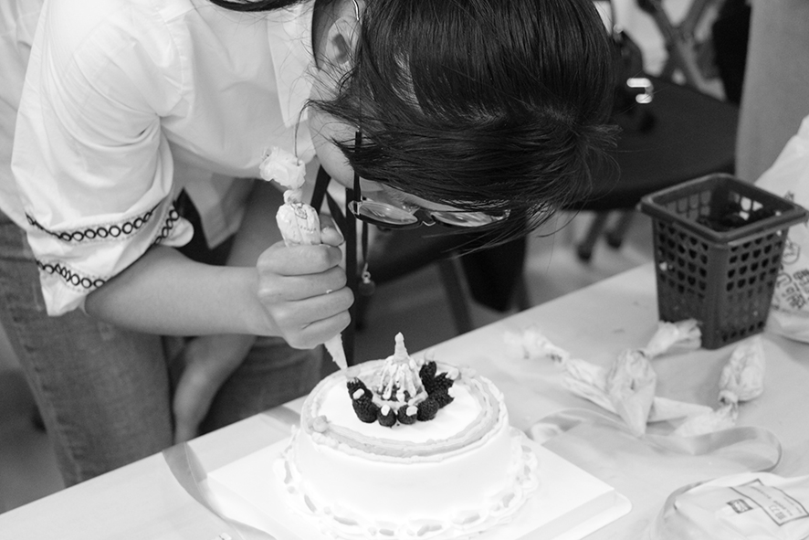
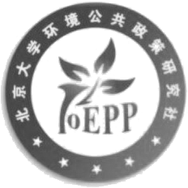
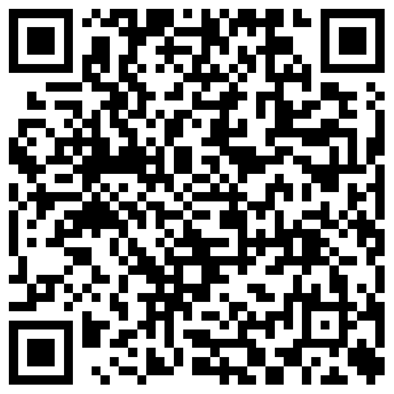
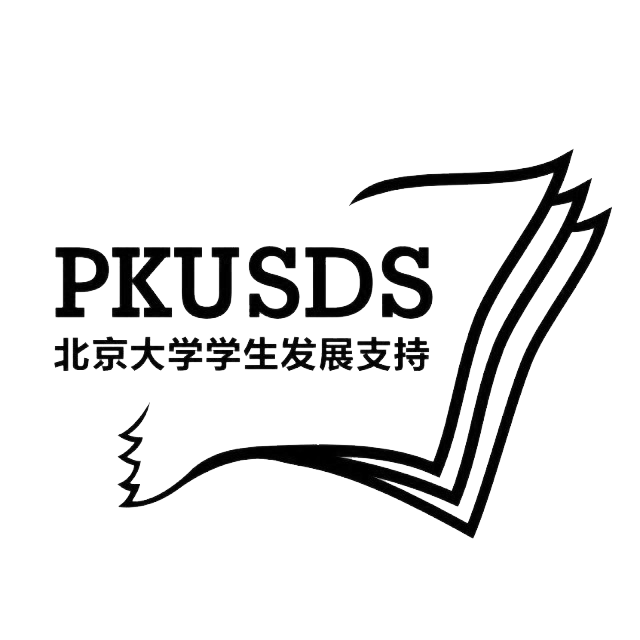

卷首语
首先欢迎各位同学来到北京大学环境科学与工程学院就读，相信各位本科生同学在这里能够度过四年精彩无悔的时光，享受自己的灿烂青春！
环境科学是一门新兴学科，至今只有几十年的历史，但其发展速度是任何一门其他学科都无法比拟的，它是一门问题导向性的科学，研究的都是日常生活中真实可见的 “真问题”。环境科学研究人和环境间的关系，宏观上我们研究人和环境相互作用的规律，由此揭示社会、经济和环境协调发展的基本规律；微观上，还要研究环境中的物质，尤其是人类活动产生的污染物及其在环境中的产生、迁移、转变、积累、归宿等过程及其运动规律，为我们保护环境的实践提供科学基础。正是因为这样的特点，环境科学是一门知识更新速度快，学科交叉性强，知识灵活，需要有创新思路的学科，对大学生自主学习的能力提出了较高的要求，也为同学们施展自己的才华提供了广阔的舞台。
我们学院是国内最早开展环境科学教学和科研的机构之一。学院包括环境科学、环境工程和环境管理三个系，同时设有环境模拟与污染控制国家重点联合实验室，水沙科学教育部重点实验室、中国可持续发展研究中心、环境与经济研究所和环境与健康研究中心等学术机构。充分凸显出我们学院交叉学科的研究优势，为同学奠定多学科专业知识背景。希望同学能充分利用好学院的平台，抓住机会充实和丰富自己。培养自己主动学习的能力和发现与解决实际问题的能力，发掘自己的学术潜质和自身兴趣，为在环境科学与工程领域继续深造和从事实际工作打下坚实的基础。我们期待更多有志于投身祖国环保事业的优秀学子加入我们，为世界的美好贡献自己的力量！
唐孝炎
2014 年 6 月 25 日
院长寄语
北京大学是我国最早开展环境领域教学和科研的机构之一，于 1972 年招收了首批环境化学专业的学生。1982 年北京大学一批来自化学、物理、地理、生物、力学、数学、法学等不同学科、有志于环境保护研究的教员成立了环境科学中心，由此系统开展了环境领域的科研和教学。面对国际国内对环境科学高质量研究成果和高层次专门人才的迫切需求，2007 年北京大学正式成立环境科学与工程学院，环境领域的研究和人才培养进入了新的阶段。
过去 40 年，依托北京大学自然科学、社会科学、医学的雄厚基础，秉承勤奋、严谨、求实、创新的北京大学学风，北京大学的环境学科发展快速，整体优势明显。学院拥有一支包括中国科学院院士、中国工程院院士、长江学者、千人计划教授、杰出青年基金获得者等高水平的教师队伍，建有环境模拟与污染控制国家重点联合实验室、水沙科学教育部重点实验室，针对大气污染、臭氧层保护、河流污染、水质改善、环境经济与管理、环境与健康等重大环境问题的研究取得了重要进展，成果不仅发表在 Science、Chemical Review、JAMA、PNAS 等国际一流学术刊物，更为中国政府重要的环境决策以及国际环境协议的履约提供了关键支持，多人获得国际、国内重要学术奖项，在国际环境界具有较广泛的学术影响，毕业的学生在环境及相关领域也取得了显著的成绩。
当前，空气污染、水资源匮乏和水污染、生物多样性降低、气候变化等区域和全球环境问题给人类社会的发展带来前所未有的挑战。而中国的环境问题更加突出、异常复杂，未来发展面临严峻的环境压力。可持续发展、生态文明等理论和概念的提出，表明环境问题的根本解决需要改变人类发展的模式，这对环境学科的系统性和综合性提出了更高的要求。寻找可持续发展的道路，是环境科学与工程学科发展面临的重大挑战，也是重要的机遇。
面对这一挑战和机遇，北京大学环境科学与工程学院愿与社会各界合作，致力于在环境与发展的理论与实践上取得重大进展，以卓越的环境学科基础研究培养卓越的环境人才、实现卓越的社会服务，为寻求人类社会的可持续发展道路做出贡献。学院的发展将秉承如下宗旨:
（一）致力于系统发展环境领域的理论体系和学科建设：发挥北京大学自然、社会、医学学科齐全，基础学科雄厚的优势，以高水平的国际合作，提升教师学术水平，以前瞻性的学术理论和综合、系统、深入的基础研究，引领环境领域理论体系和学科建设的发展。
（二）致力于精心培养高素质、高层次环境领域人才：构建具综合性、实践性、国际化特点的教育体系，培养理论与学术基础扎实、社会责任感强、国际视野和实践经验广泛，能综合分析广泛信息、深刻揭示环境问题本质并提出解决策略的领导型和行动型人才。
（三）致力于以卓越的基础研究成果支撑环境管理决策研究、推动环境技术发展：针对中国和国际社会面临的重大环境问题，开展具世界水平的基础研究，支撑重大环境政策的制定、提升环境管理能力；以理工结合的特色突破技术瓶颈、推动环境产业发展。
北京大学环境科学与工程学院院长
朱彤
目录
指导老师 老师 老师 老师 策划 吴凯 信息整理 吴凯 张祥伟 等等 排版 张祥伟 第 12 届 环境科学与工程学院学生会 2019.07
学院简介
学院概况
北京大学是我国最早开展环境学科教学和科研的机构之一，经过 40 余年的快速发展，形成了在国内环境学科领域的整体优势地位，成为国际环境科学与工程领域具有较大影响的教学与科研机构。据 ESI 统计，北京大学的环境/生态成为全球前 0.2%的学科。在近期的 US News、QS 等国际学科评估中，北京大学环境学科分别位列全球 44 位和全球 26 位，位列中国第 1 或第 2 位。
北京大学环境科学与工程学科在过去 40 余年的发展取得了 “与国际前沿同步、在国内同行领先” 的成效，在学科体系、基础设施、人才队伍建设方面取得了重要进展：
依托北京大学的多学科基础，通过多学科交叉、融合发展成完整的学科体系，建成一支以中青年学者为骨干、具有国际影响力的教学与研究队伍，其中包括 3 名中科院/工程院院士，以及多名长江学者、国家杰出青年基金、优秀青年基金、青年千人计划等人才计划获得者，培养出一批活跃在科研、政府管理、企业等环境保护领域的优秀人才；
以解决重大环境问题为目标，在关键科学问题上取得重大理论创新，取得了一系列具有重要国际影响的科技成果，研发的工程技术取得了较大的社会经济成效；
为中国政府和国际社会提供了重要的环境决策支持，多项建议被政府采纳，并有效参与到国际环境协议的国际决策支持过程中；
通过引领全面、深入的国际合作，参与多个国际学术组织的领导工作，取得广泛的国际学术影响。
基于追求卓越（Excellence）、贡献社会（Relevance）的理念，北京大学致力于建设世界一流的环境科学与工程学科学科，精心培养高素质、高层次环境领域人才，以卓越的基础研究成果支撑环境管理决策研究、推动环境技术发展。
师资队伍
环境与工程学院作为北京大学环境科学与工程专业的一级学科单位，致力于国家和国际社会所面临的重大环境问题，培养高素质、复合型的顶尖人才，已形成了一支以中青年学者为骨干、新老结合的队伍。学院成立以来，教师+教研系列人数由 2008 年 43 人，增加到 2018 年教师 59 人，工程系列 9 人，行政 6 人，共计 74 人。在职教师中包括新体制 24 人，老体制教授 18 人，老体制副教授 16 人，讲师 1 人。目前，本学科汇聚了一支以中青年学者为骨干、具有国际影响力的精干队伍，包括：中国科学院院士 1 人、中国工程院院士 2 人、千人计划教授（短期）2 人、长江学者 4 人、杰青 5 人、优青 4 人、青年千人 7 人、青年拔尖 1 人、青年长江 1 人，教育部跨（新）世纪优秀人才 7 人，有 11 位教员先后获得国务院政府特殊津贴。“区域与全球大气化学过程与环境效应”2011 年入选国家自然科学基金委创新群体，“大气复合污染防治”2014 年入选科技部重点领域创新团队，“河流多物质相互作用及其通量效应”2017 年入选国家自然科学基金委创新群体；张远航团队 2017 年入选首批 “全国高校黄大年式教师团队”；“大气污染的环境与气候效应创新团队”2018 年入选科技部 “重点领域创新团队”。
领军人才
中国科学院院士 倪晋仁 中国工程院院士 唐孝炎、张远航 讲座教授 朱彤、胡敏、陆克定 国家杰出青年科学基金获得者 倪晋仁、朱彤、胡敏、邵敏、要茂盛 教育部新（跨）世纪优秀人才入选者 张远航、张世秋、邵敏、胡敏、籍国东、宋宇、赵华章 “新世纪百千万人才工程” 国家级人选 倪晋仁 国家优秀青年科学基金获得者 刘永、邱兴华、童美萍、陆克定 “万人计划” 青年拔尖人才 邱兴华、刘娟 讲席教授 吴志军、陈琦、郭松、宫继成、李歆、刘颖君、叶春翔 北京大学 “优秀青年人才引进计划”（“百人计划”）入选者 童美萍、要茂盛、邱兴华、刘永、刘思彤、陆克定、刘娟 科技部 “重点领域创新团队” 大气复合污染防治创新团队（邵敏） 国家自然基金委创新群体 区域与全球大气化学过程与环境效应（朱彤）
学科建设及人才培养
学院以培养未来环境科学与工程领域高水平、复合型人才为目标，通过构建综合性、实践性、国际化的教育体系，培养基本理论与学术基础扎实、社会责任感强、国际视野和实践经验广泛的领军人才，形成了本科生—研究生—博士后全过程培养体系。过去十年里加强和落实各层次人才培养的质量工程，形成完善的环境科学与工程学科培养体系；培养过程中建立和落实全面提升人才培养质量的教学和研究生科研管理系列措施；加强学生培养的国际化，大力推动境外交流学习项目，鼓励学生在多元文化环境中丰富自己的思维方式，提升交叉学习的能力。目前学生成为学院学术创新的重要力量，1 名博士获得全国百篇优秀论文，博士生在读期间人均发表 2 篇以上高水平学术论文。环境项目 2010 年入选教育部 “基础学科拔尖学生培养试验计划”，环境与生态实验教学中心被教育部评为 “国家级实验教学示范中心建设单位”。学院目前设有 “环境科学”、“环境工程”2 个本科专业，拥有 “环境科学与工程” 一级学科硕士、博士学位授予权，下设 “环境科学”、“环境工程”、“环境健康” 三个二级学科，培养了一大批对中国和全球可持续发展做出重要贡献的人才。
科研成果
学院的老师积极参与和引导国家重大科学研究决策，主持系列国家级大型专项等课题。2008-2017 年，学院到校经费超过 8 亿元，人均到校经费 1185 万元，人均科研经费位列北大前列，科研经费相对充足。2007-2017 年学院荣获多项国家和省部级奖励以及国际荣誉奖励，国家科技进步二等奖 5 项，技术发明二等奖 2 项，教育部科技进步一等奖 6 项，环境保护部科学技术一等奖及包括 IPCC 联合国政府间气候变化专门委员会诺贝尔和平奖贡献奖、庆祝蒙特利尔议定书签署 20 周年的特别奖 “Best-of-the Best Awards” 及日内瓦国际发明展览会金奖多项国际荣誉，以卓越的研究和国际服务履行了国际环境保护中的中国贡献。本学科多名教师先后担任国际学术组织和学术期刊的职务，60 余人次在国际学术刊物中担任副主编和编委职位，40 余人次先后在国际学术组织任重要职务，如：UNEP 臭氧损耗评估委员会（EEAP）共同主席、国际全球大气化学科学指导委员会（IGAC）共同主席、联合国生物多样性与生态系统服务政府间平台（IPBES）国家委员等。2008-2017 年，学院共发表学术论文 2145 余篇，其中 SCI 收录 1245 篇，包括在 Science 上发表论文 5 篇，在 JAMA、PNAS、Chemical Review、Nano Letters、Nature Geosciences 及专业一流刊物发表多篇论文，基于北京大学发起的 PRIDE-PRD 和 CAREBIJING 国际大气化学研究计划，在《Atmos. Environ.》、《J. Geophys. Res.》各出版专刊一期、在《Atmos. Chem. Phys.》出版专刊二期。在《中国科学》出版专刊一期。北京大学环境科学与工程学科的多项研究论文持续入选 ISI 高引和热点论文，学院的倪晋仁、朱彤、邵敏、胡敏等多次位列 Elsevier 环境领域中国高被引学者。
新生活动
新生入学活动安排
（表格）
重要事项提醒
提醒……
新生训练营信息
（表格）
学习生活
学长学姐经验谈
不负韶华再出发
又是一年迎新时，花落花开，去年学生会策划编辑这本手册的情景还历历在目，不由回忆起自己刚入学时的懵懂，也开始想象你们一张张写满好奇的笑脸。读着师兄师姐们的经验分享一路走来，不知不觉到了该分享自己这乏善可陈的生活的年纪，很荣幸有机会来念叨自己的一点体会。人事有代谢，你们也会很快从倾听者变成分享者，要不负韶华，探索自己的大学生活。
为人要独立
陈寅恪先生写过这样十个字，“独立之精神，自由之思想”，我认为大学就是一个不断形成自己独立人格的过程，过程中有大大小小很多目标，但是终点只有一个——你，成为你。初入燕园，你最大的感受可能是 “不同”，五湖四海每个人是那样不同，各种不同的经历打破了你之前认为的条条框框，生活竟然可以这样，这就是生活带来的惊喜和大学的独特魅力。但是你很可能在这纷纷扰扰中无所适从，感知不到自我，没有关系，平台给予你的就是五彩缤纷的颜料，你要做的是用他们来描绘自己的独立人格。操千曲而后晓声，观千剑而后识器，这个时候你一定要去大胆尝试，大学可以不断试错，甚至没有对错之分，不要辜负自己的好奇和想法。尝试过后，更重要的是把自己看到的、经历过的都变成自己的，形成自己的价值判断，这些经历和想法就是你的生活本身。如何做呢？我认为最重要的是多琢磨，多反思，温故而知新，把自己和身边人的经历和感悟点滴积累起来，就是自己的人生。这是一个长期的没有终点的过程，大学要养成这样的习惯。
独立有时候需要坚持。生活纷纷扰扰，当你不断经历，形成自己的想法之后，就要坚持你认为的正确。任何环境下都有分化，当然不只优和劣两种评判，每个人有自己的生活方式和想法，这个时候就不能随波逐流。举一个简单的例子，你在按自己的计划学习专业课，但是看到周围人在听讲座、在学英语、在玩社团、在运动、在刷剧……每个选择都有可取之处，你的时间又全部自己支配，这个时候你会怎么选择，能坚持做自己的事情吗？当然计划不是一成不变的，但是一定要有自己的安排和方向，你可以参考别人的选择，但是绝不能像狗熊掰棒子——掰一个，丢一个。大家可能很快会遇到 “拖延症” 这个敌人，很多时候什么都想做，就静不下来把手头事做好。所以首先要心里想明白，对自己的生活很透彻，知道自己要做什么、怎么去做，心正而后身修，想清楚了，能坚持本心不为外界所动，生活才能井井有条。
独立绝不是孤立。独学而无友，则孤陋而寡闻，大学的成长离不开周围人的影响和支持，形成独立人格是个过程，在这个过程中一定不能闭塞，要多了解，多沟通，多接受。这里提供了一个很广阔的平台来广交朋友，但是一切信息和机会都需要自己主动去获取。主动去认识有趣的人，主动去寻求经验和帮助，你将打开一扇多彩世界的大门，勇敢迈出第一步。君子和而不同，在多彩的世界里你不要担心自己不合群，正相反，有自己独立的人格特点，别人会更加欣赏你，更愿意与你交往。你要保持自我，但是一定不能固执，要善于向他人学习，变成更好的自己。
做事要用心
进入大学你会面临很多挑战，但是有一个法宝能无往而不利，就是用心。任何事情你可以选择做多做少，做深做浅，但是只要自己决定做了，就一定要用心做好，这样才能有收获。遇事最怕贪多嚼不烂，自己都搞不清楚自己做的是什么，没有有效成果，自己也把控不了。骗别人很容易，骗自己更容易，可是骗这个世界的因果有点难，用心做事情的收获才是自己最宝贵的财富。我做学生工作的经历对此深有体会，大一时候我只加了院学生会外联部和院团委宣传部两个部门，想法很纯粹，就是想谈合作和编刊物。大二只做了院学生会外联部长一份学生工作，每天想最多的事就是怎么拉赞助、学生会的钱从哪来，生活各方面都能联系到这点，也就有更多机会来做好。前两年的学生工作经历很简单，但是我学会了怎么静下心来把一件事情做好，这个过程中点滴积累下来的能力并不少。大三当选院学生会主席以后有更大的平台，做各种尝试，在校团委、院团委、党支部、社团也才有了更多历练。学生工作职务越高责任越大，虽然不用做很多基础性工作，但是需要考虑的方面更多，要求更高，大二一年用心积累下来的见识和能力才让我能应对复杂情况，能在更多锻炼中继续成长。大家不能一开始就带太多功利心，这样自己能力跟不上会很累，用心把手头的事情做出色，能力有提高，机会和平台也会随之而来，就会越走越宽。当然什么时候都不能混日子，大三一年我做事情更加小心，更加用心，也才发现自己的见识和能力有更大的提升空间。
用心才能靠谱。大家一直在强调靠谱的重要性，所谓靠谱，就是 “你办事，我放心”，归根结底在和人打交道上。人是社会性动物，生活很少能离开互相的支持和帮助，老师能欣赏你关注你，课堂小组能愉快合作，实验室的师兄师姐愿意指导你做科研，当遇到选择和困难时有更多的人来帮你，有重要任务时别人第一时间能想到你，这些都需要有靠谱的好印象。质胜文则野，文胜质则史，自己用心把事情做好还不够，这只是让人觉得靠谱的基础，适当的沟通技巧能有效缩小人与人之间的距离。我认为最重要的是换位思考，己所不欲，勿施于人。再举一个简单的例子，微信让人与人之间联系更加方便，生活中很常用，当自己看到信息时能不能第一时间回复？或者很长时间不回之后有没有解释原因的意识？并不是在鼓励大家玩手机，只是如果你是发消息的人，对方这样做会不会让你的心里更踏实？一次、两次……久而久之，你在别人心中的印象和定位就会被固定，别人会决定是否愿意与你深交。换位思考就是为你接触的人多考虑，让别人更舒服，有时候很小的改变能带来很大成效，其他事情也都是一样。
上面这些只是与你们有类似经历后的一点体会与感悟，大学生活绝不仅仅如口中所言，在这里你会遇到各色各样有趣的人，发现各色各样多彩的生活，只要你愿意，你选择，并为之努力，就会创造自己的青春。每个人都是一张白纸，属于自己的华章等待着自己去书写。不要忘记，在这个故事里，你，永远是主角。
燕园生活即将开启，来到这里只是一个全新的起点，永远不会是巅峰。生活一直在继续，接下来的日子你们可能会遇到不适应、烦恼和困难，不会一帆风顺，但是我希望看到的永远是今天这张笑脸，永远像今天一样对未来充满期待。斗罢艰险又出发，期待你们的精彩！
走出舒适区
一晃四年。感谢学生会在四年的最后给了我执笔追忆往昔的机会。惭愧的是我追忆往昔，也没有特别厉害的经验能献给大家，不善言辞，就简单说一下我认为重要的一句话——走出舒适区，希望能够帮助到大家。
走出舒适区
大学是一个自由的地方，自己的大部分时间都可以自由支配。除去课程时间外，可以自主地选择将时间和精力放在什么事情上。当年级增长，自主支配时间增加，我却发现自己会越来越习惯长时间待在舒适区里。每当这时，我总会督促自己走出舒适区。舒适区以外的未知虽然有时让人恐惧，但也常常带来意想不到的结果。例如尝试新鲜的事情，扩大交际圈，用百无聊赖的时间去读一本新书等等。探索未知世界本身是有风险的，刚开始可能会比较焦虑，但逐渐探索之后会获得满足感和成就感，而这个过程则会提高整个人的能力和素质。
做有意思的事情
舒适区外并不都是洪水猛兽，也能做一些有意思的事情。
大一大二在学工上投入了很多心血。曾和文艺部的搭档一起开过脑洞再将脑洞变为真实的活动形式。看到付诸努力的事情顺利完成，总有满满的成就感。讲堂，是我大学生活的一个重要部分。在这个志愿社团中，我和志同道合的人一起面对富有挑战的志愿工作。一年又一年的坚持，让我从面对突发情况的慌张无措到日积月累后处理问题的冷静从容。
我最喜爱的运动是球类运动，排球与篮球为最。排球是一项团队精神远大于个人能力的运动。大一刚加入排球队的时候，作为学妹的我虚心接受学姐的指导，在比赛时常常被学姐保护着我的防守位置。大二之后，我就变成了学姐，去指导和保护学妹。这种传承十分有爱。球场上，一传的稳定和扣球的快感交织，与队友熟练配合得分的喜悦让我深爱着这份运动。与排球相比，篮球对我来说是一项更具挑战性和难度的运动，更加具有身体碰撞性和战术技巧性，而我，也喜欢这有意思的挑战。
科研也是一件有意思的事情。我的研究方向是污染控制与环境生物技术，日常与微生物打交道，微观世界的反应充满了未知与变数，我则是想去探寻一下其中的规律。科研里不缺的可能就是遇到各种各样无法解释的现象、数据，甚至打击到科研热情，但有趣的是也会不断冒出新的想法，通过控制实验来验证猜测，最终找到问题根源，解决问题。
结语
还记得大一的我是一张不知道如何涂鸦的白纸，对大学生活充满了未知与好奇。学姐学长告诉我的经验，在我面前铺成开来许多种可能，每一个个体单元的可能，都有独特的亮点和精彩。希望学弟学妹们都能刻画出自身的可能，拥有一个充实多彩的大学时光。
勇敢出击，全力以赴
很荣幸收到学生会的邀请来分享自己在燕园四年以来极其有限的体会和经验，希望能给大家提供一点小小的帮助。
面临选择勇且决
每到春季学期，大一咨询双学位，大二咨询本研，大三咨询保研和出国，大家一直在面临一个又一个选择。对于选择，不同人的信息和角度不同，通过咨询身边的过来人可以得到很多不同甚至截然相反的观点，当然最终的决定还要自己拍板。一位师兄对我说过，“有些事情在亲身经历之前是很难知晓结果的，与其纠结，不如经过思考后，果断做出选择并全力以赴。” 在出国还是保研这个问题上，我就一直徘徊不定，经过充分咨询，比较两者差异后，最终决定 “与环院男篮续约五年”。哪个选择更好我无从得知，能做的只有不断努力，把当下的选择做到最满意，当以良好的心态面临选择时，相信结果一定不会差。生活是一个不断选择的过程，做决定的过程很痛苦，但是一旦决定，就要全力以赴，选择专业方向、双学位、学生工作等都是同样的道理。
全力以赴问耕耘
正如刚刚所说，一旦决定就全力以赴。例如经双这些自己选择的课程，没事尽量就别翘课。虽然考前突击可以取得说得过去的成绩，但过程的缺失意味着自己失去了与经济学者面对面学习交流的机会。甚至可能久而久之习惯性地偷懒，有空也不去上课，得到两个小时的空闲，但失去了对一个领域的了解，也丧失了在经济方面深入研究的机会，返回头看会得不偿失。
本研实验也是如此，选择了就全力以赴，在这个过程中，主动性和执行力尤为重要。我在大二上学期机缘巧合进入童美萍老师课题组，一开始断断续续地 “打下手”、阅读相关文献、和师兄师姐讨论，从中学习了一些入门基本知识。到了大二结束的暑假，我和师兄反复讨论大致确定了自己的本研题目。第一次相对独立地做科研，我就像打了鸡血一样，一天工作十小时，最后也取得了一些科研成果。我一直认为，如果只在课堂或者实验室玩手机、看球赛等各种 “划水”，投入的时间反而更多，效果更是不能保证，还不如提高效率，工作时认真，休息时放松。毕竟，“露脸” 没有任何意义，实打实的投入才是提升能力的基础。此外，更加主动和靠谱也会让你身边有更多优秀的人，从而获得更多的信息和指导，拥有更好的机会和选择。
一个人的精力毕竟有限，追求太多，不可避免地会导致其中的一些质量低，所以要随时保持取舍，量力而行。对于已经选择的事情，也要有良好的心态，用平常心面对各种 bug，毕竟成功也离不开运气。
找到组织共成长
除了学习科研这些 “正事”，生活也是不可缺少的。在各种活动中，往往能找到自己感兴趣的组织，也就是很多集体，包括学生会、社团、课题组、运动队等一切你感兴趣、有归属感的群体，从中也会收获一些感悟和提高。
我们院篮球队就是这样一个组织。在这个组织里能够得到认同，认识不同的人，在场上释放压力、共同进步，在场下互相调侃、放松心情。作为这个组织的 “管理者”，我对学院男篮有着不一样的情感，赢球的期待、战术成功的兴奋、协调时间的崩溃、被 “鸽” 的郁闷，过程中五味杂陈，成了我生活中不可或缺的一部分。此外，我也认识了很多优秀的师兄弟，除了一起打球、分享赢球的喜悦和输球的失落外，我也从他们那里得到更多不同方面的知识和信息，例如出国保研、就业信息、环境各方面学术知识、球队历史，不同阶段面临的不同选择我都会在这里找到参考和建议。课题组、学生工作大概也是类似，在生活中要找到一个感兴趣、适合自己的 “组织”。
每个人的人生轨迹都不尽相同，大学是一个可以充分试错的地方，所谓经验也只是一个参考，没有什么是绝对正确或错误的。衷心祝愿大家在校园里不断探索，发现有趣的事，成为有趣的人，做出合适的选择，全力以赴，完成属于自己的蜕变！
把握机会，学会选择
亲爱的学弟学妹们：
欢迎你们来到环院大家庭！收到学生会邀请来写这一篇学长学姐经验谈的时候，我想起了那年初入燕园的我看着当年那一届的学长学姐经验谈的情形。那时候的我在憧憬，三年之后的我是否也有这个机会向萌新们分享我的经历，而我又会怎么讲述。三年弹指一挥间，当如今的我真的接到邀请，却不知道如何开口。我的大学生活经历不多，教训倒不少。最后我还是决定不用什么漂亮话描绘在这里你们会有的收获，不去像长者一样告诉你们应该怎么做。因为我知道，即将在这里成长的你们拥有更多无限可能的未来，一定比我这个老学姐有更多的资本去选择与收获。所以让我碎碎念一些我的经验教训，与君共勉。
我的教训，说多也多，说少也少，总结起来，其实都是关于选择的。从高中那个只有一个努力方向的环境出来，进入大学之前或许你做的唯一重大的选择就是选择北大还是清华，在甚至可能受限的条件中选择你的专业。可是，进入大学后的每一步，都需要你去选择，是对是错慢慢摸索，然后一步步独立走上你要走的道路。我其实是一个很没主见的人，随波逐流、不敢尝试，三年来吃了不少亏。所以在这里，我便借用我的老师、学长学姐以及挚友曾跟我说的一些话，来和你们聊聊。
“当你不知道选择什么的时候，就努力让自己有资本在未来选择。”
我相信迷茫病不只是我一个人从小到大的困扰。从初中开始，我第一次认真思考我未来要做什么，却怎么都找不到可以戳中我情怀的事情。后来上了大学，我还是不知道自己适合做什么，只知道循着学长学姐们的脚步，加学生会做部长，修经双，做本研，报学院的暑期项目……走一遭下来，还是没发现我的兴趣，此时我却发现我的好朋友都有自己的理想或一技之长：新闻传播、金融、心理、CS……看着他们在自己喜欢的路上努力拼搏，我为他们开心，自己却更加恐慌，也更加迷茫。于是我找朋友倾诉，找学长学姐谈心。可哪里有人会真正知道我该做什么啊。整天沉在迷茫焦躁情绪中的我就这么错过了刷高 GPA 的机会，错过了提前备考 T 和 G 的大好时间，错过了申请交换，错过了大把可以投身实验的时间，错过了尝试投实习最重要的时间，于是在需要做出关键决定的大三寸步难行：出国 GPA 不出彩，申请读博科研不够，读硕实习不够钱也不够，保研想保的导师已没有名额，换方向经历不够。在焦头烂额的六月和七月的轰击中，我时常后悔当时沉浸于迷茫中的我没有着眼于当前，努力给未来自己创造选择的资本。现在想来，这也算是大学上给我最重要的一课，即使迷茫，还是有很多事情可以提升自己，为日后能做选择而积累。最可怕的不是没有理想，而是止步不前。
“选择的基础，是足够的了解与尝试。”
或许选择需要勇气和一腔热血，但不是草率。大二下学期一次班会，班主任为我们这些还在闲云野鹤状态没有进组的同学敲响了警钟，我也开始联系老师进组。小时候听说纳米这个概念的新奇让我把目光全都放在做纳米相关的老师里，却再没有更多的了解，明明对微生物毫无兴趣却草率地开始研究微生物和纳米矿物作用的课题。这次草率的选择让我在接下来一年的时间陷入做微生物实验的瓶颈，不断的失败更是让我有了深深的抗拒。同样选择草率之痛也在我身边的朋友身上不断上演，起因都是没有足够的了解。所以，在这里我想说，环院的师兄师姐及老师都是非常 nice 的，希望你们多去了解，多去获取信息，拥有足够的底气来做一个为自己负责的选择。
“一个萝卜一个坑，总有一个是你的坑。”
这句话是一位对我帮助很大的朋友送给我的，我也送给你们。迷茫病如我另一个最大的问题是，总是认为自己一无是处，尤其在北大这样优秀的人云集的地方，这样的感觉更为强烈。曾经在和室友坐在宿舍的地上互相倾诉，我可以讲出所有人的优点，却讲不出自己的，好像自己除了比别人能吃、比别人能睡以外毫无特别。我列举出很多职业，列出从事这些职业的优秀者需要什么样的素质，每一项我都不是顶尖。可是即使这样，室友的眼中也看到了我很多的闪光点，并鼓励我勇敢尝试。在决定换方向以后，去丰富相经验的过程也让我开始发现也许这样其实更适合我。其他人的光芒太耀眼，也许会让你看不清自己的光芒，但是世界这么大，总有一个地方是你可以发光发亮的地方。每一次试错，都是离这个地方更近。
其实你看，关于选择，我还是没有完全找到属于我的答案。在新的方向上，我也不知道未来会不会只是一次高级的复制。但也许生活就是这样啊，哪有什么一定的事情。对的选择也许像良人，遇上方知有。在这之前我愿意相信，一切都是最好的安排。你尝试了，就是最好的结果。所幸北大是这样一个给你了足够的资本去试错的地方，环院更是在用越来越包容的体系给你更多尝试的机会。愿所有方向清晰的你们能不忘初心地一路走下去，也愿处于迷茫阶段的你们找到所爱。你们的生活，一定更加精彩。
道路漫长，充满奇迹
站在即将成为大四学生的节点回头望，真的惊异于悄然跑过的日子竟有如此之快的脚步。在大学的前三年，我有许多道理听过但没有做到，也有道理是自己慢慢摸索出来的。记得从大一未入学开始，我就看了很多知乎、微信上的诸如 “不虚度大学是一种怎样的体验” 的讨论文章，里面不乏让我很受用的内容。现在既要我也写一些所谓的经验分享，那我暂且写下目前浅浅的几点想法吧，希望能有所帮助。
首先是关于大学。至今仍印象很深的一个场景是大一上的某天，我和同加入学生会秘书处的同学在路上遇见了部长姐姐，就开始聊天——那天学姐和我们说，她感觉大学生活从来不轻松，“比高中惨多了”；我俩连连点头。那么为什么大学生活是珍贵的？学姐说，因为在这里你看到身边的人都如此努力；因为燕园给了我们充分的自由和勇气。的确如此。在燕园，从一些人身上我看到了理想大学生活的缩影，并受之激励而不断努力。在燕园，每个人可以有自己的道路，不管你是专注学术学有所成也好，还是热心公益参加志愿活动；又可能，你成绩履历平平却读了很多书，或是有自己的兴趣并将其发挥到极致——无论哪一种生活，只要认真投入，就能得到周围人的认可并获得一席之地。大学意味着拥有丰富的机会和选择，也意味着更需要清醒的自我认识和定力。所以很希望你们也能在燕园这片土地上找到理想大学的样子，并且自己也能活成那种样子。
关于师友。有一本书我特别喜欢，是大二时读到的，叫《北大回忆》（强烈推荐！看完你会知道 “原来曾经有这样一些北大人，有这样一种北大生活”）；里面有两句话让我印象十分深刻——“何畏衣冠陋？只恐见识穷。打开天地就不穷，广交师友就不穷。” 诚如斯言。此前我一直都是课堂上默默无声的学生，但看到书中张曼菱学姐描述的她和同学老师热烈讨论甚至争论的故事，我也深受感动并开始主动提问、参与讨论，无论是 “空气污染和气候变化的关系” 还是 “大气科学有哪些前沿问题”，还在和同学一起玩空气观测的时候结识了一位外教老师并保持联系……事实证明思想的碰撞确实能带来灵感的火花，并且老师和同学都会非常耐心地回答和交流，能给我们很多帮助。所以，如果你也是和我一样内向的同学，不妨也大胆走出舒适圈，多发言，多讨论，一定会有收获的。
关于学业。第一学期（其实何时都是）无论因为任何原因都不要耽误应该保证的学习时间，也绝对不要偏科——即使特别喜欢某门课程希望深入探索，也要确保合理的时间分配。直到现在我仍然为 70+的高数课而遗憾，但是那也帮助我思考，进而明白，在大学认真学习是本分，但成绩不应是首要的追求。学习的方法和所谓的技巧也都是次要的，关键是一直保持求知欲并且增进学以致用的能力。记得大一的一门实验课结课时助教曾发信息：“非常期待看到你们以后脱颖而出——成绩什么的就太俗了，虽然很重要哈哈”。这我也一直记着，并勉励自己 “在成绩之外的方面脱颖而出”。
关于长远规划。大胆尝试，仔细思量。大二下的班会上班主任说：“明年这时候你再不考虑好方向，那可真不行的”。现在想来，如果我能更早一点开始思考，更多地去尝试，大三下学期面对保研/考研/出国的选择时大概就不会那么迷茫。“选择比努力更重要”，这话没错，但是选择本身也是一种需要大量尝试来掌握的技能，所以建议学弟学妹们能更早（比如大二上）就开始对研究方向的尝试和未来规划的思考，这样最后选择时就能游刃有余。
关于资源信息。钱理群先生有言：“中学时你被动地受教育，大学时你主动地受教育”。进入大学，就要努力提高学习和信息检索的能力。我直到大二才学会在图书馆索书借书，学会后惊呼以前整整一年错过了多少学习的机会。图书馆的一小时讲座和数据库、“北大讲座网” 和学院宣传栏的讲座信息等等，都是非常重要的资源，一定要慢慢学会搜索和使用。
关于活动和生活。在即将到来的招新中你会看到，各类学工和社团琳琅满目。我们可以积极参与，认识新的朋友，也锻炼自己在沟通、管理、文稿等方面能力；不过活动也不用太多，选几个最感兴趣的就好。另外就是把宿舍布置地温馨一些、把日常事情做得有条理一些；减少碎片化阅读浪费的时间，把刷朋友圈的功夫用来和小伙伴约着打球游泳，让自己的生活充实起来。
关于节奏。要勤勉但也不用勉强，因为 “太用力的人跑不远”。忘了是哪位教授的中文系开学典礼发言，其中就提到，大一时，主要就是 “端正心态、接纳同学、管控自己、摸索经验。能够走在人前，景物独赏，当然不错。如果一时半会适应不了，也不必急于求成，不必事事争先，平稳度过一年级，没有掉队且略有收获，就是胜利”。若遇到不顺，也不要太慌忙，记得看过一篇文章，标题就叫《在北大感受过痛苦才是一生的幸福》——谁又能把大学过得极尽完美呢，慢慢前行，终有回报。
最后，愿我们都能享受为心之所向持续努力的过程，并时刻怀有对生活毫无保留的那份热爱；祝我们都——道路漫长，充满奇迹；老学姐与大家共勉！
学长学姐学术体验
实验室，我们黄金时代的爱恋
实验室之于我们，就好像疆场之于战士。环境学科的用武之地颇为广泛。小到一个无菌室、一辆大气监测车、一所理教楼顶的观测站，大到一个工厂、一片 “田野”、乃至一个社会，都是我们的实验室。实验室里的学术讨论兼顾高度严谨的科学作风与天马行空的创新思想。与来自统计学、数学、信息科学、生命科学、经济学、社会学、管理学等诸多学科研究者的合作，更使得实验室生活成为趣味、机遇与挑战并存的最棒的 pressure game！当然，刚踏上沙场的战士总要有所历练方能策马扬鞭。最初的实验室生活总会有诸多不顺。可能砸进去好几个月的时间，也调不好仪器、测不准指标、搭不好反应器、建不好假说、选不对模型。不过，让我收获最多的，也是这部分历练的时光。方法掌握得愈发纯熟、性子磨练得愈发有耐性、对研究方向的喜爱也愈发深厚。
那么如何迈出第一步呢？很简单，就是广泛地去看。“Climb every mountain, ford every stream, follow every rainbow, till find your dream!” 认识一位 Stanford 统计系的博士师兄，他曾经花了整整一年的时间造访了学校里应用数学、计算化学和计算生物系的所有实验室，最后才发现了自己的所爱。这个寻找挚爱的过程被国内的学者称为 “开窍”。本科四年的实验生活如果真的能使我们 “开窍”，那又何尝不是一种幸福。
So choose your battel, find your love, pave the way, and catch your time to shine! This is our golden time. Good luck, brave soldiers!
唐宇石
当我们在谈论实验室的时候
当我们在谈论实验室的时候，我们在谈些什么呢？
两年前，我和你们一样初入燕园，想象中的实验室是一派窗明几净，白底蓝边的实验台上整齐地摆放着五颜六色的化学试剂，身着白色实验服，眼戴护目镜的研究人员手持一只盛着蓝色透明液体的试管，专心致志地振荡着……然而当我经历了两年的大学生活，参观了一些实验室，以及最终进入我目前所在的科研小组，才发现自己当时对实验室的刻板印象仅仅停留在初中化学实验室的阶段。
我目前所在科研小组的实验室刚投入运行，实验室位于北京大学计算中心楼顶，属于北京市高精尖中心实验室。该实验室通过一系列高精尖仪器设备，如各类质谱仪、色谱仪等，对大气细颗粒物及其前体物进行研究。我们的实验室极少见到传统化学实验室里的瓶瓶罐罐和各类化学试剂，而是一台台摆放规整的仪器和楼顶错综复杂的线路管路。实验室人员日常会检查仪器是否正常工作，拷贝仪器数据，对仪器进行维护、标定等。在这之前，我参与了实验室搭建的部分工作，这些工作给了我非常深刻的印象，也使我收获了许多平日里不会在意但却非常实用的实验和生活技能。举个例子，在搭建颗粒物采样管路的时候，你需要化身为管路工；在设计采样管路中电子阀门自控系统时，你需要化身为电路工；在调试最（没）新（有）版本（manual）的傲娇仪器时，你需要化身为软硬件攻城狮……一言以蔽之，不懂电子电路软硬件的管道工不是好的仪器研究员。在这过程中，你需要不断地踏出自己的 “舒适区”，尝试各种新鲜的，甚至你之前以为一辈子都不会接触的事物；而当你曲曲折折地完成这一项项任务的时候，你的成就感简直要爆棚，你会对接下来的一切充满期待，你会逐渐减轻对 “未知” 的恐惧，因为你曾经一次又一次地战胜了未知。私以为，对科研的执着始于兴趣，成于成就，终于使命。在你对科研有那么一点点的好奇与兴趣之时，一次次小小的成就感会给你继续走下去的勇气与信心；而成就感往往来源于你对未知的探索与挑战。
因此，在学弟学妹们负笈燕园之际，衷心希望大家都能多进实验室，尝试一些未知的事物，收获一段新鲜的体验。实验室并不总像我们想象中的那样神圣与庄严，现实中实验室之大，无奇不有，说不定就有一款懂你的欢喜。
李垚纬
还有一些话
如果对于实验没有特别的兴趣，在大二下进组就可以了；如果有浓烈的兴趣和比较好的实验技能，则可以在大二下或更早些时候就进组。而进入科研组以后，起初无非就是去旁听组会以及帮师兄师姐打下手。对于感兴趣的项目，大可以坚持旁听组会，并且逐渐参与到组会的讨论中来。除了参加组会以外，和师兄师姐的交流也是十分重要的。最后就是可以多阅读一些与本组研究方向相关的文献，尤其是本组以前发表过的文章，这些都有助于更好地了解这个小组、融入这个小组。
汪若宇
参与科研工作的目的是真心想做科研，不能掺杂了太多其他的想法。真正做课题其实并不轻松，既是体力活：需要查东西，写东西，又是脑力活：涉及某个内容要不要写，内容之间的逻辑关系是什么，找的材料能论证我的观点吗等等一系列问题。如果你觉得这些不轻松的事情你都能接受，那肯定没有问题。但也可能自己进来以后发现自己不喜欢，弄得自己很累，甚至想退出，不想做了，这会影响课题的完成，可能会给自己以及课题组的老师或者师兄师姐造成不好的结果。
刘俊鑫
要做好多干活的心理准备，在本科生科研的过程中做到不怕吃苦；要认清自己的发展目标，并用相应的态度和方法来实现自己的目标。尤其是希望出国的同学，应当在科研的时候争取发表文章，如果未能如愿也应当尽量给导师留下一个良好的印象。
梁嘉良
在不影响大一大二课程学习的前提下，可以尽早进组做实验，先从最简单的事情做起（听讨论甚至是打打杂），慢慢学习，即使基础知识还不充分，也可以在实践中获得经验，最终把实验做好。
马知遥
进入实验课题组之前，基础课程要认真听，要把基础知识学好；确认导师之后，要多听听组会，多和师兄师姐交流，多看相关文献，做实验时多思考。
进组后，学习的大多只是初步的实验技能。每次组会，听师兄师姐介绍当前的实验进展时，会发现有很多的知识是听不懂的，但也没有关系，坚持听组会总会有提高。刚进组的时候最需要的是去了解所跟的老师的正在进行的课题，不需要多详细，但是至少要从全局上知道老师在做什么，师兄师姐都在做什么项目；然后就是跟老师交流，了解自己要做的方向。多读文献，多泡实验室和师兄师姐学习。相关文献阅读和基础实验技能是大二的主要任务吧！
葛智
1. 什么是 “进实验室”？
进入大学之后你一定经常能听见师兄师姐在实验室忙活，“进实验室” 似乎也成为了学术的代表，那么什么是 “进实验室” 呢？
首先，比 “进实验室” 更准确的叫法应当是 “进组” 学习，也就是参与到老师的课题组，跟随老师和师兄师姐就一些课题展开研究。这个课题可以是老师组里现有课题，也可以是你自己想要研究的课题。由于我们院老师研究的方向涵盖面广，从工科、理科到社科，因此 “进组” 并不意味着整天都在做实验。并且即使是你研究的课题需要做实验，那么你能学到的也远大于做实验本身。
2. “进实验室” 能收获什么？
“进实验室” 最直观的收获是就所研究的课题有了更深入的专业技能，包括整理研究进展、收集数据资料、掌握实验技能、分析实验数据等，并由此掌握了研究问题的一套思路脉络。鉴于我们专业较强的应用性，平时课程的学习更多停留在知识的教授，而课题的研究需要灵活使用所学知识，并且自主学习需要的但课堂未教授的知识。这些对于知识的灵活自主性，对我们今后处理各类问题大有帮助的。
在这过程中，你会与师兄师姐进行沟通，老师也会对你的想法和成果进行指导，这些交流过程往往能刺激你脑中的灵感。交流的内容不局限于学术探讨，大到人生规划未来方向，小到生活信息迷茫困惑，他们都很乐意与你交谈，而从他们走过的道路上我相信你也能收获不少。
3. 何时何地？
什么时候进实验室呢？怎么选择实验室呢？
一般来说大二下会有 “本科生科研”，那时你可以选择一个课题进入老师组里进行研究。不过其他任意时候老师们都很欢迎学生进组学习。但是考虑到大一大二基础课程较多，参与的活动也较多，而实验室的学习也会占据一定时间，因此你可以合理分配自己的时间。
一般在大一对专业有了基本了解之后，你可以在大二上开始了解各个老师的研究方向，有中意的方向可以去跟老师聊聊，或是去听听组会，以及问问相同研究方向的师兄师姐，最后做决定。
真正进入实验室之后你可能非常喜欢现有研究方向，也有可能发现这一方向与之前想的不太一样，那么你可以与老师聊聊，再了解一下其他方向，并且去其他方向再学习学习。老师们都不会介意，而多点尝试也会帮助你最终找到中意的方向。
4. Final
毕竟进实验室是一件严肃认真的事，希望大家都能认真对待实验室的学习，自己越积极主动，收获得便越多呢！
当然，实验室也有不少欢乐，希望你们都能找到自己心仪的方向，拥有精彩的大学生活。
张沥月
海外交流
内容
暑期实习
内容
学生活动
“学长的火炬” 校园旧书循环活动
团委
微信公众号：PKU 团聚环科人（pkucese-tw）
总体工作
根据院党委和校团委的工作部署和要求，结合学院实际，制定每学期团的工作计划，定期召开副书记、部门会议和团支部书记、支委会议，传达上级指示，研究、布置和检查团的工作，经常向院党委和校团委汇报工作，反映情况，努力开创团工作新局面，体现本学院特色，做好党的助手。
开展团的思想政治工作，配合学校、学院进行思想道德教育和时事政策教育，团结和带领学院团员青年努力完成院党委和校团委交给的任务。
抓好团的组织建设，健全团的组织生活，完善团的各项制度，教育团员履行团员义务，保证团员的权利不受侵犯；做好发展新团员和超龄团员退团的工作；组织团员学习党的知识，积极向党组织推荐优秀团员，配合党支部做好发展大学生党员的工作；做好团员组织关系的接转和团组织情况统计工作；负责团费的收缴、上缴和留成团费的管理和使用；负责对违反团纪的团员进行批评和教育；
指导研究生会、学生会工作，协助研究生会、学生会的思想建设和组织建设；
组织开展健康向上的文娱体育活动，丰富团员的课余文化生活。积极开展社会实践活动和对外交流活动，增强学生才干，培养学生能力，提高学生素质。不断丰富团校的课程配置，提高学生骨干的工作能力。
抓好团的宣传工作，加强校园文明建设，配合各项工作，充分利用宣传工具，增强凝聚力，发扬团队精神，体现学院特色；
配合校团委做好评优工作，并负责组织团的院内评优工作；
关心团员青年的正当利益，向上级有关部门反映他们在学习、工作、生活方面的意见和要求，协助学校、学院改进有关工作；
组织团员骨干，进行共青团工作的理论研究，不断探索共青团工作的新路子；
完成院党委和校团委交给的其他任务。
学生副书记寄语
迎接开始，相信过程！勿忘善良，铭记感恩！
未来充满可能，用勇气去探索，用初心去坚持，不徐不疾，水到渠成，期待你们的精彩！
欢迎大家来到燕园，走进环院大家庭，且听风吟，静待花开。
穿行在燕园四季中，愿你做个有心的人，听见鸟雀与蝉鸣。遇到有趣的人，相约美食与出行。成为有梦的人，不负岁月蹉跎，步步登高落定。
湖光塔影，燕园四季，初心不移，少年可期！祝愿大家在环境学院有所思，有所为，有所成！
书记助理寄语
“桃李不言，下自成蹊”，燕园是一片崭新的天地，它将以宽容的胸怀容纳你所有灵动的思维火花。然而未来并非一帆风顺，愿各位师弟师妹谨记北大 “勤奋、严谨、求实、创新” 的校风，不负燕园韶华。
欢迎来到燕园，在这里，发现新的自己，未来可期！
志坚者，功名之柱也。登山不以艰险而止，则必臻乎峻岭。愿每一位新同学都能在这片天地找寻到自己的追索，不负青春少年。
青年志愿者协会
河北雾灵山留守儿童牵手活动
北京大学环境科学与工程学院青年志愿者协会（以下简称环院青协）成立于 2007 年，上承中国青年志愿者协会，隶属于北京大学环境科学与工程学院团委，是环境学院规模最大的学生组织。协会成员包含本硕博三类青年学生，几乎每一个本科新生在入学后都会选择加入青协。协会以奉献爱心、志愿服务、提升自我为宗旨，“在公益中推进环保，在环保中践行公益”，曾于 2013 年荣获 “阿克苏诺贝尔中国大学生社会公益奖” 铜奖。2014 年习近平总书记莅临我校视察工作时，对环院青协的九龙湾社区共建项目给予了充分肯定。2016 年，环境科学与工程学院青年志愿者协会获评 “志愿服务优秀组织单位”。2016 年，协会主办的 “河北雾灵山留守儿童帮扶系列活动” 获评荣获 “优秀青年志愿服务项目金奖”。
环院青协以 “爱心”、“环保” 为主线，打造了 “雾灵山留守儿童牵手” 活动、“学长的火炬——旧书传承活动” 等一系列品牌活动。
九月：“学长的火炬” 旧书传承活动，通过传递旧书传承循环节约的理念；
十月：“雾灵山留守儿童牵手” 活动，为留守儿童送去温暖，与孩子们一同成长；
十一月：防雾霾宣传活动，为公众讲解如何在雾霾天更好的保护自己；
十二月：北大青协嘉年华，展示青协成果，并为留守儿童爱心图书馆的扩建筹集资金。
春季学期：“走出象牙塔，共建校社情” 活动，青协与燕北园社区以及海淀图书馆社区分馆建立了合作，为社区居民带去了绿色的问候。
主要活动
河北雾灵山留守儿童牵手活动
雾灵山留守儿童牵手活动发起于 2011 年，至今已有 8 年历史。服务对象为河北雾灵山实验学校的留守儿童，活动分为两个部分：
第一个部分是每年的 10 月份，环院青协的志愿者团队会带着学院老师的捐款、书籍去往留守儿童学校，为孩子们送去关爱与温暖。志愿者们会以游戏的形式对孩子们进行心理疏导教育，培养孩子们阳光开朗的性格，鼓励孩子们树立目标、寻找理想；此外，活动中还会对孩子们进行环保知识普及，包括日常节能、垃圾分类、常见危险污染物认知以及环境维权等内容。
活动第二部分是每年的 6 月份，留守儿童将会前往北京大学，领略燕园秀丽的风景，感受北大自由的氛围，激励他们树立远大理想。
此外，志愿者还将与留守儿童保持密切的联系，通过 “温暖衣冬” 衣物捐赠活动、“你来我往” 和留守儿童书信交流活动、“书山有路” 为留守儿童建立流动图书馆活动等活动，与留守儿童保持联系。
“学长的火炬” 校园旧书循环活动
该活动发起于 2013 年，起初由 “绿色空间·校际联盟” 组织协助开展，自 2015 年起，活动由环院青协主办。活动旨在充分利用校园内旧书资源，提高书籍利用率，减少浪费，号召大家投身到低碳型、节约型社会的建设中，使低碳、节约、环保的理念深入人心，让环保口号真正落实到日常生活。
每年春季学期，青协志愿者将会在燕园校区宿舍楼内放置纸箱，向全校学生回收旧书；每年的秋季学期初，环院青协会将收集的旧书免费发放，师生只需填写一份 “捐赠承诺书”，承诺来年的六月，将不需要的书籍再无偿捐献给环院青协，即可免费挑选 5 本书籍。
该活动每年参与人数众多，广受师生好评，2015 年共计 295 人参与活动，收到书籍一千余本，送出书籍 1180 余册。2016 年收到的书籍两千余本，活动规模可见一斑。
其他活动
“走出象牙塔，共建校社情”——燕北园社区共建活动、海淀图书馆社区分馆书籍整理活动；
“雾是家乡厚，霾是北京纯”——防雾霾宣传活动；
“擦亮心灵之窗，展望绿意未来”——雷锋月爱眼护眼宣传活动；
“一方展台，尽显风采”——青协嘉年华活动。
曾获成就
2013 年，环院青协凭借品牌项目 “河北雾灵山留守儿童牵手活动” 荣获 “2013 阿克苏诺贝尔中国大学生社会公益奖” 铜奖。
2014 年 5 月 4 日，习近平总书记莅临北京大学，在视察环境科学与工程学院工作时，对环院青协与北京市九龙湾社区的共建项目给予了充分肯定。
2014 年，协会品牌项目 “河北雾灵山留守儿童牵手活动” 再次荣获 “北京大学 2014 优秀志愿服务项目” 称号。
2014 年，协会的 “防雾霾宣传活动” 入选 “绿色空间·校际联盟” 组织的 “十佳环保活动”，获得 1000 元活动资金。 2016 年，环境科学与工程学院青年志愿者协会获评 “志愿服务优秀组织单位”。
2016 年，协会主办的 “河北雾灵山留守儿童帮扶系列活动” 获评荣获 “优秀青年志愿服务项目金奖”。
2016 年，环境科学与工程学院青年志愿者协会获评 “志愿服务优秀组织单位”。
2016 年，协会主办的 “河北雾灵山留守儿童帮扶系列活动” 获评荣获 “优秀青年志愿服务项目金奖”。
秘书长寄语
不忘初心，不惧未来！
心之所向，素履以往！
宣传部
宣传部在原有基础上进一步整合，对学院现有公众号、微博、BBS 版块、各类杂志院刊等新闻媒介等进行梳理，成功建立并运营学院团委微信公众号（PKU 团聚环科人）。
主要活动
新媒体中心
新媒体中心主要职能为新闻媒介的管理与运营。负责学院现有微信公众号、微博、各类社团、杂志等基本信息统计（发布内容、用户数、发帖频率、现负责人、联系方式等），并运行学院统一微信公众号（PKU 团聚环科人），发布学院学工相关信息。其次，新媒体中心也将组建专门的新闻写作团队。负责学院所有学生活动的新闻通讯稿的写作，审核，发布。
院刊编辑
院刊编辑中心主要职能分为两块，第一是负责学工周报的编辑（电子版编辑和纸质版印刷），整合时间段内学院学工新闻，定期向学院发布。第二是院刊编辑工作，主要负责学院刊物《环境经纬》的编辑和发布，为学院师生搭建一个属于自己的沟通交流平台。
部长寄语
首先祝贺大家来到燕园，来到环院大家庭。在燕园，你将探索无限可能，请不忘初心，勇往直前！如果你对传播感兴趣，如果你爱与人和文字打交道，欢迎加入团委宣传部，这个学年我们一起燥起来！
新的起点，新的征途，希望大家能够在园子里发现更好的自己。欢迎加入团委宣传部，福利多多哦。
组织部
组织部是每一个团组织必不可少的重要结构部门。组织部担负着连接各级团组织与团组织建设等重任。
主要活动
基本团务工作
完成校团委部署的团籍管理、团费收缴、团员和团组织情况信息统计等基础性团务工作。
资料档案整理工作
协助学工办完成院友录的信息收集整理与更新工作；收集整理团委及其他学工部门的活动资料与档案。
团组织建设工作
协助团委书记统计各部门工作计划进程，制作学工部门统一时间表；组织策划团队建设与素质拓展活动；联络安排各部门参加例会，在各部门、各级团组织间收发通知与回执；协助团委书记制定完善迎新换届等部分工作的各项规章制度。
思想引领工作
“思想引领” 与 “成才服务” 是团委工作的两个核心，组织部将于年末汇编资料新颖、内容丰富的《团委学生骨干先进性学习资料》，体现团委的思想引领作用。
团委外延工作
依托组织部于团委各部门以及各级团组织之间便利的联络条件，将承担团委外延工作中的相应部分。
部长寄语
祝你们在园子里有所收获、有所成长，做一个勇于奉献、敢于担当的新时代青年。
欢迎来到环院，成为环院的一份子。“Freedom Through Truth For Service”，希望你们追求真理的灵魂能在这片自由的校园找到人生的意义，活出最好最真实的自己。
团校
团校为本科生团学骨干的成长提供了平台，我院团校与信息科学技术学院、工学院合办并组成 “信息与工程科学部联合团校”，针对团学骨干、学生干部进行形式多样、内容丰富的系列培训。在联合团校中，你可以结识到其他学院的好友，与他们碰撞思想，擦出灵感的火花。
主要活动
院系交流
与信科、工院的小伙伴一起参加素质拓展、主题参观等有趣的活动，在过程中拓宽交际圈，加强交流，充分发挥三院特色，实现合作共赢。
能力培养
这里有公文写作培训、电脑维修培训等多种培训活动，为学生骨干搭建交流学习共同成长的平台。自 2018 年开始，我院团委、学生会、研究生会各部门组织的培训也会纳入团校课程体系，将为大家提供更丰富的资源。
实践活动
这里为大家提供一个开展调研活动的平台，选定一个感兴趣的主题，对其展开调查研究并得出最终报告，为维护美丽燕园贡献自己的力量。
联合团校素质拓展活动
秘书长寄语
又是一轮绚丽的朝阳，又是一个崭新的起点，很高兴能够看到作为优秀共青团员的你们走进环院。学无止境，希望你们能够在团校各项活动的参与中得到进一步的锤炼，获得更多知识与技能，成为环院团委乃至校团委中的领军人才。
秘书处
秘书处是团委的综合办事机构，主管党务党建、文秘、内务、组织协调等工作，直接受中心组的领导，并对其负责。
主要活动
负责学院党务党建工作，协助支部开展共建活动，协助组织党校培训、党员发展事务。
负责日常团委干部的会议安排、会议签到与记录， 协调团委各部门工作。
对团委各项活动计划、总结及其它文件资料进行搜集，整理和编辑。
组织、参与团委大型活动的策划，负责各项活动的经费管理，主管团委财物，保证其合理使用。
负责和学生助理进行沟通交流，协调学生助理工作
秘书长寄语
欢迎大家进入环院，开启新的人生阶段。愿大家始终不悔过往，不惧将来，闲听燕园花开叶落，时光穿梭，但求历练与真知，不负岁月。
实践部
实践部是团委负责学生课外学术科研活动和社会实践活动的部门。通过 “挑战杯”、创业计划大赛等课外学术科研活动，和各项社会实践活动，推动学生课外科研，培养学生创新精神和创业能力，提高学生综合素质。
主要活动
创业
举办北大学生创业计划大赛，是青年学生创新创业教育的重要载体，也是提高学生创新创业能力、培养团队协作精神的良好平台。
实践
组织学生对本专业相关领域相关的政府机关、企事业单位或专业相关的工程项目、设施的参访活动。每年度的假期社会实践主题鲜明、内容丰富、形式多样、规模庞大。今年首次在环境综合实习课中添加进了社会实践活动，更加丰富了实践活动的内容。给学生提供了走出校园、了解社会的机会，在实践中实现价值、提升自我、创造未来。
每年度的假期社会实践主题鲜明、内容丰富、形式多样、规模庞大。给学生提供了走出校园、了解社会的机会，在实践中实现 “受教育、长才干、做贡献”。
环境科学与工程学院赴浙江省嘉兴市实践调研
部长寄语
把辛勤的耕作当做生命的必要，即使没有收获的指望，也依旧心平气和的耕耘。
书中自有黄金屋，书外亦有颜如玉。祝愿大家在实践中发现真理、认识世界、明确方向、提升自我，于书外感悟另一番新天地。
念念不忘，必有回响。
学术科创部
学术科创部是一个致力于为环境科学与工程学院同学提供一切与学业、学术和科研有关的力所能及的帮助与支持的部门。部门的主要工作包括举办北大 “挑战杯”——五四青年科学奖竞赛系列赛事，组织课外学业辅导活动和提供学术交流平台与机会等。
主要活动
科研创新
举办北大 “挑战杯” 系列赛事，鼓励同学们追求真知、勤奋学习、勇于创新、全面发展，以繁荣学院的学术科创文化为初心，为培养敏于求知、敢于创新的新型人才做贡献。
学业辅导
与北京大学学生发展支持项目组的朋辈辅导部合作，为同学们提供在课余学业辅导和考试周复习答疑方面的有效帮助，包括梳理知识体系、解答疑难问题、指导学习方法和督促学习效率等方方面面。希望能够为大家减轻学习压力，激发学习兴趣，构建良好学习氛围。（参见
学术交流
积极开展朋辈分享交流座谈会、学术科研竞赛、特邀教授讲座及学校开设的主题丰富的其他等讲座等，为丰富和活跃学院的学术科创氛围、培养 “厚基础、宽口径、重能力、有特色” 的创新型优秀人才做贡献。
部长寄语
首先祝贺学弟学妹们成功开启北大新征程，希望大家在接下来的北大生活里，即使很难做到不留遗憾，也能总是保持前进的热忱，努力成为更好的自己。最后欢迎大家加入学术科创部，与全体环院同学一起共同进步，祝一切顺利！
新生定向赛活动
学生会
微信公众号：PKU-CESE-SU（pkucesesu）
总体工作
北京大学环境科学与工程学院学生会是在院党委的领导和团委的指导下，独立自主开展工作的学生组织，并在学院领导老师的大力支持和广大同学的拥戴爱护中茁壮成长。学生会由协调管理的主席团及宣传部、文艺部、学术部、体育部、生活部、外联部、秘书处 7 个具体负责部门组成。
一方面，学生会积极组织开展各类文体活动、素质拓展活动，丰富同学生活、并为学业课业提供便利；另一方面，学生会为学生和老师搭建沟通交流平台，凝聚环院人的向心力和集体智慧，促进同学共同成长。学生工作是大学期间重要的综合能力、素质素养拓展平台，学生会是本科生学生工作的主要组织者和承担者，加入学生会，意味着挑战、历练和担当。
主要活动
“爱乐传习” 文艺汇演
每年秋季学期 12 月 9 日，学校将举办 “一二·九” 合唱比赛，纪念抗日救亡运动，展现各院风采。10 月至 12 月，学生会将邀请老师，组织同学训练、学习，为合唱比赛提供保障。作为大学期间少有的全年级同学为同一个目标奋斗的机会，其漫长艰苦的准备和最后的精彩亮相是每届北大人无法抹去的珍贵回忆。环境科学与工程学院多年与历史学系联队，一次次的准备培养了同学间、院系间深厚的友谊，经历之后再回首，你会发现收获了属于自己的感动。
环院文化节
每年春季学期，学生会将举办环院文化节这一大型活动，通过多种形式向全校师生宣传学院文化，倡导环境保护。往年学生会组织了户外实验室、趣味答题、以物易物、绿色出行、PM2.5 亲测等外场活动和多场环保特色讲座，帮助同学发现近在身边的绿色生活，在活动中体验环保特色。环院文化节是全校同学关于环保的一次盛典，今年的环保 idea，等你来规划。
常代表
常代表的职责包括：
解释北京大学学生会章程，监督其执行实施。
在不召开学代会的年份选举执委会主席、副主席，在执委会主席、副主席空缺时进行补选。
根据执委会主席团提议，决定委会各部（室）负责人的任免，接受执委会成员的辞职。
审议和批准执委会每学期工作计划、工作总结，审查经费使用情况：监督检査执委会主席团工作，有权对主席团成员提出质询，被质询者必须予以答复；每学期对执委会主席团成员投信任票，作为对其工作评价的依据。
罢免常代会会长团成员和执委会主席团成员。
听取、收集对学生会工作和学校有关部门工作的意见和建议，并于两周内予以答复。
在换届选举前，提交需由大会审议的各种文件、各项办法和有关委员会的组成名单。
领导院系常代会。
遇有特殊问题，主持调査工作。
参加学生代表大会，在必要时参加临时学生代表大会。
决定学生会的重大事项，行使学代会赋予的其他职权。
常代表寄语
蜗牛角上争何事？石火光中寄此身。随贫随富且欢乐，不开口笑是痴人。
希望大家的大学生活都能生龙活虎，笃定地行走在自己的朝圣之路上。
主席团
分工
主席：吴凯。统筹安排环院学生会工作开展，恪守环院团学工作纪律；明确学生会各部门职责，做好协调工作；积极进行跨学院交流学生会工作经验活动，保证学生会的先进性；开展学生活动，要把知识性和思想性融入活动中，作为学习的一种方式，起到促进同学们学习进步的作用！
副主席：马丁。分管外联部、秘书处工作开展。主要负责与学院老师及学生会主席对接工作，明确责任分工，抓好分管部门的工作，指导和监督分管部门工作的开展和实施情况，及时发现问题，解决问题。
副主席：刘能胜。分管体育部、学术部工作开展。主要负责与学院老师及学生会主席对接工作，做好分管部门的工作，对该部门主办的活动进行具体指导与监督。协调所分管部门的工作，督促部长做到自己的职责。
副主席：张祥伟。分管宣传部、文艺部工作开展。主要负责与学院老师及学生会主席对接工作，指定两部门整体工作计划，把控工作关键环节，并对工作进展进行全程跟踪，保证两部门能够高质量完成各项工作。
主席团寄语
大学生活总是从迷茫到坚定的过程，初入燕园我们对专业知识知之甚少，还不曾结识天南海北的朋友，甚至难以适应远离父母的独立生活；但走时我们已怀揣知识与梦想，这里也成为我们难以割舍的第二个家，我们在这里学习知识、汲取营养、提升能力。大学是能够让人迅速成长的，学会平衡学习、工作、生活的各个方面，才能够在大学里找到属于自己未来的目标和方向，才能够有足够的动力勇往直前。
初入燕园的你们，想必对一切都充满了好奇：形形色色的社团，各种各样的部门与活动，有趣的课程……希望你们在这一年里能够多多尝试、多多探索，发现自己的 “心之所向”，同时也希望你们能够用心对待自己的每一个选择。愿你们能在这一年里收获快乐，收获温馨，收获珍贵的回忆。
弃捐勿复道，努力加餐饭。
从初入燕园到成为即将大四毕业的大三学长，恍然间已经在北大的校园内待了 2 年。这期间自己犯过错，遭遇过课程压力，也遇到了很多巨大的挑战；但是回过头来也能发现 “进一步有进一步的欢喜”。总的来说，自己也在不断的成长和进步，不断地摸索自己想要成长的方向。
对于即将进入燕园的学弟学妹们，想送给他们的一句话是：努力做自己。找到自己想要的，和自己相比较，那么终有一天会得到自己人生的满足感。而对于在园子里结识的老朋友们，则希望大家学习工作生活顺利！
大学生活不知不觉已经过去了一半，在这短短的两年间，我在环院学生会结识了很多有趣的人，一起参加各种千奇百怪的活动。新的一个学年又要到来，希望大家加入学生会，积极参与各项活动，在这里收获大学期间最难忘的回忆。（另：欢迎加入学生会宣传部）（另另：给自己打个广告，Google 一下 “Xzonn 的小站”，你会收获许多有用的学习资料的）
“一二·九” 合唱排练
宣传部
宣传部是学生会中的宣传主力，全院的所有活动几乎都有宣传部的身影。新生身上的院衫、各场晚会时的宣传品和视频、“一二·九” 合唱时的排练手记和视频、学院的特色纪念品、品牌活动——“环影” 摄影作品征集活动、各类活动的摄影……这些都离不开宣传部的工作。在宣传主业之外，宣传部安排的相关专业软件的培训也受到了全院同学的欢迎。目前，在宣传方面，学生会基本形成了 “各部均有基础宣传能力，宣传部负责综合指导” 的局面。
主要活动
宣传技能培训
宣传部分阶段、分时期地安排了数次专业软件（Photoshop、Premiere、Aegisub 等）培训、网络技术培训、摄影相关引导培训等，结合工作安排为部员和全院同学提供了一个接触新技能、相互交流学习的平台。每次培训大家都收获颇丰，满载而归。
学院大型活动宣传品的制作
每次学院大型活动前期，宣传部部长和部员们就要紧锣密鼓地动作起来，负责包括海报、展板、节目单等各类宣传品的制作。每次都可以看到自己的设计的东西成为实物分发到所有人的手中，那种自豪感可是很难得的啊。
“环影” 摄影作品征集活动
面向全院征集优秀的摄影作品，让大家手机相机里珍藏许久的好照片有了一个让所有人共同欣赏的机会，其中优秀的作品可以制成明信片更久地珍藏下去。征集过程大家积极踊跃，最后的作品也是令人眼前一亮。
部长寄语
宣传部是个幸福的大家庭，大家在一起吃吃喝喝胖胖胖，一起用制作海报、剪辑视频，一起设计专属 logo！摄影、PS、PR 等技能，你值得拥有！
宣传部是个和谐的大家庭，希望对制作视频、海报等等工作有兴趣的你可以投入我部的怀抱。我们在工（ bān ） 作（ zhuān ） 的同时交际情谊，在互助的同时加深友谊。走进宣传部不需一丝疑虑，走出宣传部留下的是成长和回忆。欢迎加入我们。
文艺部
文艺部的主要工作是准备、组织与开展院内的大小文艺活动，如节日晚会、歌唱比赛等，旨在更好地丰富本科生的课余生活，给大家发掘和展示文艺特长的机会，为其发现除学术之外的快乐！
主要活动
迎新晚会
这是新生初入燕园的第一场晚会，面向全体新生。迎新晚会给予每位新生上台展示才艺的机会，唱歌、跳舞、小品、相声等各种节目形式不限，期间还穿插有游戏和抽奖，新生参与度很高。初入燕园，愿迎新晚会能为你接风洗尘，让你感受到环院大家庭的温暖。
新年晚会
每到辞旧迎新之际，我院将举办最隆重的新年晚会。新年晚会面向环院全体师生，甚至会请来神秘嘉宾，看点多多，期待满满。当然，作为最隆重的晚会，新年晚会的奖品也更加丰盛，期待所有人的参与！
毕业晚会
一学年中的最后一次晚会，也是师兄师姐毕业前的最后一次晚会。毕业晚会以送别师兄师姐为主题，面向全体毕业生，当然也欢迎其他年级的学生送上精彩的表演，为师兄师姐们留下难忘的感动的回忆。
新年晚会抽奖现场
部长寄语
我在过去一年加过文艺部、宣传部等很多部门，但最后还是选择接管文艺部。文艺部真的是一个很可爱的家庭，大家一起准备美美的推送，一起享受策划整个学院晚会的成就感等等～在这一过程中学弟学妹们可能会有困惑或遇到困难，但学长学姐们一定会努力帮大家一起克服的！（另提文艺部有神秘 buff，现脱单率为 100%）
来文艺部：get 组织大型活动 hold 住全场的控力，新媒体宣传推销技能，部长独家亲授撩妹脱单经验，见证学长学姐唱跳 rap 不为人知的一面，走上人生巅峰！
学术部
学术部秉承交融共通的理念，致力于营造融洽而富有活力的学习、学术氛围，为环境科学与工程学院的本科生提供一系列学术科研方面的支持。
学术部将整理相关学习资料，开设学习指导讲座，助力本科生的常规学习；提供高品质讲座信息、学术创新大赛咨询，触摸科技学术前沿；举办实验安全讲座，强化实验室安全意识；采访环院青年学者，推送学院最新科研成果，拓宽师生交流渠道；科普环境学科知识，实地深入参访调研，坚持 “引进来” 与 “走出去” 相结合……
学术，是一种艺术。学术部，是一件艺术品。我们是部员，也是匠人。这件艺术品，在等待你的雕琢。
主要活动
环迹
我们会筛选本院师生的最新优秀研究成果，将学术论文整理为易于阅读的推送，在院学生会官方公众号上发布。通过 “环迹”，学术部开拓了学术成果更加普众的渠道，在自身学习消化的同时，把营养分享给更广阔的人群。
环院学术路
学术部常常与学院的优秀教师展开互动，通过学术采访的方式，收集老师的学术推荐和学习指南。同时，也会邀请在老师组内开展研究工作的师兄师姐参与相关活动。学术部希望通过采访，激发同学们对学术科研的热情和与老师交流互动的积极性。
学习、学术讲座举办或推荐
学术部定期整理讲座信息并做出推荐，涵盖学校开设的讲座、学院特邀教授讲座、学生分享交流讲座、学术科研竞赛咨询等，意在为同学们提供更便捷的信息渠道，做到学科素养的交叉和丰富，培养环境人深邃而宽广的视野。
学习资料整理
学术部在期中、期末季整理主要基础课程和专业课程的学习资料，也有一些推荐的辅导书目分享，旨在为同学们的高效学习再加一把油。
本科生出国保研交流会现场
部长寄语
看似寻常最奇崛，成如容易却艰辛。在学术部，从点滴小事起付出、积累，在长期锻炼中感悟、蜕变，真正 “由无字句处读书，同有肝胆人共事”。
凡是过往，皆为序章。学术部值得成为新的起点，盼望你在云淡风轻中收获真情，在百炼千锤中收获成长！
体育部
环院体育部主要负责筹划、组织学院内和校际的与运动有关的活动，同时和其他部门有十分亲密的合作。在体育部，你可以感受到北大杯、新生杯的热血竞技，碧水蓝天杯、运动会的友好团结，新生定向、夜间一小时的新奇趣味；在体育部，你不仅可以和运动健将切磋技艺，还可以和其他部门帅气美丽的学长学姐进行灵魂♂ 沟通。除此以外，本科生的体育锻炼抵扣情况统计也在体育部的工作范围内。
主要活动
碧水蓝天杯
“碧水蓝天杯” 系列体育联赛是环院自己的年度大型体育赛事。无论你是学生还是老师，无论你是足球小将、灌篮高手还是对乒乓球、羽毛球情有独钟，你都可以在碧水蓝天杯的赛场上来一场酣畅淋漓的对决，收获一份坚不可摧的友谊。
“地球一小时” 夜间定向赛
夜间定向赛的举办是为了响应以保护环境、节约资源为核心理念的 “熄灯一小时” 活动的号召，鼓励大家走出寝室，放下电子设备而开展的一次校园活动。该活动面向全校师生，你可以和其他院系的小伙伴组队寻找校园内隐秘的 “藏宝点”，也可以现场组队邂逅神秘的 ta。此外，我们设置了许多 NPC，他们有新颖的游戏形式，脑洞大开的通关任务，千奇百怪的藏身地点，保证大家玩得开心。夜间定向赛已经成功举办多年，逐渐沿袭成为环院的经典项目，越来越多的人愿意在这样一个特殊的日子里一起运动、游戏、答题、增进感情。
部长寄语
希望大家能够在体育部野蛮体魄，强健精神！
希望大家在体育部能够在锻炼身体的同时，找到属于自己的生活方式，过上幸♂ 福生活。
生活部
生活部的主要工作是负责本科生在校内生活方便的各种指导与帮助，帮助大家更好地适应大学生活。生活部会在中秋节、男生节、女生节等节日举办活动，为环院大家庭送温暖。另外，学生会微信公众号由生活部管理。
主要活动
中秋节
独在异乡为异客？那和同学们一起制作冰皮月饼可好。我们为你准备场地、原料、工具。月饼也不一定是圆的，芥末也不是不能做馅儿。考虑到上次月饼们的卖相，生活部正在考虑是否开展月饼评选活动，转念一想，管他呢，快乐就好～
男生节
11 月 12 日被称之为男生节。在那个时候，“一二·九” 合唱也已排练约一月之久。我院会和历史学系一起举办男生节活动。有许多有意思的项目，如寝室全家福、心愿卡、祝福视频等。希望能让同学们感受到环院大家庭的温暖。
女生节
有男生节怎么能没有女生节呢？3 月 7 日这一天，大家可以聚在院楼，一起做做蛋糕聊聊天，分享美食与快乐。往年还有过给男生们化妆的活动（呼吁广大男同胞们来参加～），我们的老部长身先士卒，留下不少美（ hēi ） 照 ～去年风靡一时的女子力大测试也是生活部的脑洞哦，题目可沙雕可走心，总之是最能体现环院仙女们欢乐生活的～

女生节蛋糕 DIY 活动
部长寄语
燕园，环院，这是你们未来四年生活的地方。你会选择怎样的生活呢？做一个沉迷学习的巨佬？还是通宵打怪升级的肥宅？或是日啖荔枝三百只的极品吃货？是文体两开花？还是唱跳 Rap 篮球？无论选择哪种生活方式，just keep it real，做最真实的自己！生活部，爱生活，我们一起做环院最会生活的小可爱！
外联部
外联部是一个必不可少的部门，在学生会的职能主要是赞助支持、组织团购和联谊交流。外联部能够建立与其他院系、其他学校的联系，让各个专业、不同学校的大家有更多信息交流的机会，认识更多的小伙伴。外联部一般通过组织留学讲座、线上为商家宣传推广、线下贴海报等活动拉到资金，从而支持学生会各活动的进行；同时，也可以去食品店为学院的晚会拉到实物赞助～新生们开学的饮用水团购、电话卡团购等也都由外联部组织。在外联部，你充当的不仅仅是一个学生的角色，在与商家的交流、各协议的签署中，你也扮演了半个商人的角色，在学术之外了解到更多与人交涉的艺术。
主要活动
留学讲座
往年与各个留学公司合作举办的讲座是我们主要的活动，一方面可以为学生会各项活动提供资金，同时讲座也能够为同学们带来有关留学的信息和咨询渠道。
团购
新生入学所需的电话卡、饮用水以及各种军训物资等等都会由外联部组织团购，为同学们谋福利。
联谊
通过与其他学校、其他院系的合作为同学们带来更多信息交流的机会。
部长寄语
初入燕园，你们一定会有很多好奇，希望在大一这一年，社团、学生会能够带给你很多帮助，并且能够得到很多锻炼。欢迎加入学生会外联部，认识更多的小伙伴～
秘书处
秘书处的工作主要分为三个部分，一是协助学生会主席团处理学生会的日常事务，做好会议记录和资料整理，以及各种信息的整理与传达；二是管理学生会的财务与物资，并做好账目记录；三是举办一些有趣的活动，如 “环语”，“随机晚餐” 等，使环院大家庭更加温馨和睦。
此为秘书处的第六年，它期待着你们用新奇的创意与真诚的付出将它装点得更加多彩。
主要活动
环语
“环语” 是秘书处于学生会微信平台创办的一个栏目，聚焦环院风采人物、热点事件。在过去的一年里，秘书处的成员们或征集、或采访，将这个栏目办得有声有色。节日祝福语的征集与推送体现了环院人之间的浓浓温情；“一二·九” 专访则带着大家一起回顾集体活动的点点滴滴。这些线上的推荐与分享，让环院人的生活更加丰富充实。
信息直通车
信息直通车是秘书处于微信公众号创办的一个栏目，秘书处的同学每周收集整理下周的天气、活动通知、讲座信息、电影剧目信息，以推送的形式传递给大家，让大家的生活能更加便捷。
随机晚餐
随机晚餐是秘书处于 2015 年创办的一个面向全体师生的活动，通过随机分组进行晚餐的形式为全院师生提供一个全新的交流平台，增进师生之间的了解，丰富大家的课余生活。随机晚餐到目前为止已举办多次，同学们的呼声也越来越高，大家在轻松愉快的氛围中享受美食、畅所欲言。
随机晚餐
秘书长寄语
初入燕园的你们，恰逢心性正盛，正求年少有为。社团、学生会、各项活动……在这第一年我希望你们能不错过每一个机遇，不轻视每一次抉择。想一想如果此时抹去各类 “可能”，将来是否还有可能？愿你们所想皆所遇，今年不须臾。
第 12 届研究生会合影
研究生会
微信公众号：北大环院研会（pkucesegsu）
总体工作
北京大学环境科学与工程学院研究生会（Graduate Union of Peking University, College of Environmental Sciences and Engineering）是学院全体在校研究生 “自我教育、自我管理、自我服务、自我成长” 的群众性自治组织，代表的是学院全体研究生的权益和意见。学院研究生会积极拥护党的领导，夯实爱国励志教育、弘扬求真力行品质，充分发挥 “学生之家、师生之桥、干部之校” 的作用，团结研究生勤奋求学、扎实探索科学文化知识，助力生态文明、筑梦碧水蓝天！
自 2007 年成立以来，环院研究生会在学院党委的领导和团委的指导下，积极主动地开展工作，在参与式校园管理、互动式学生维权、启发式学术交流、专业化社会实践和多样化文体活动等方面，增进学院研究生之间、研究生与学校之间以及研究生与社会之间的交流沟通，丰富学院研究生校园文化生活。环院研究生会由常代表、主席团和部长团组成，下设联络部、学术部、就业部和文体部四个部门，并主管北京高校环境联盟的外事对接和内事组织等工作。
常代表
常代表的职责主要围绕制度制定与完善、权益保障、民主监督以及代表联络、提案整理落实与反馈开展。在平时日常工作中，常代表会监督研会是否充分发挥了服务同学之作用，是否保障了同学们学习生活中的权益及利益，和大家共同完善研会章程制度，有条不紊的落实研会工作，不负使命的履行研会职责。
常代表寄语
作为一入学就加入了环院研会的 “老” 学工，我从研一的联络部干事在部门内发光发热、承担起北京高校环境联盟的重启工作以及和其他小伙伴们一起共同策划、参与各项院内重大活动；再到研二作为研会主席，承担着整个研会统筹、协调、运营策划的 “总指挥” 任务，落实了各项优秀的制度纪律并首次修订了工作手册、巩固我们的代代相传的优良传统，完善各部门的特色品牌活动、依托高校联盟平台继续推进资源共享和互利共赢的校际交流，并重启了北京高校环境联盟模拟面试大赛这一对同学们就业有着极为丰富的实践意义的活动。环院研会虽小，但这里是让每一位成员得到系统性锻炼、全方位提升的综合舞台；日常的工作虽然平凡，但一点一滴中积累的是难能可贵的经历、汇聚的是于未来不可多得的机会与资讯。
主席团
分工
主席：刘牧时。统筹安排环院研究生会工作开展，恪守环院团学工作纪律要求；以负责任的态度完成力所能及的服务工作、以讲情怀的方式弘扬引领未来的青年使命；切实行动代表同学、全心全意服务同学，让环院研究生会的每一位都成为学院全体研究生最热心的知心人！
副主席：徐薇。分管学术部、文体部工作开展。主要负责与学院老师及研会主席对接工作，制定两部门整体工作计划，把控工作关键环节，并对工作进展进行全程跟踪，保证两部门能够高质量完成各项工作。
副主席：严宇。分管就业部、联络部工作开展。主要负责与学院老师及研会主席对接工作，把握就业部、联络部的工作方向和总体规划，了解具体工作进展，井然有序地组织开展各项工作。
副主席：李明镜。主管北京高校环境联盟工作开展，以微信公众号建设、线上信息交流群、学术论坛、模拟面试大赛等多种形式推动联盟高校环境相关院系的交流与合作，实现资源共享和优势互补。配合常代表对接校研会工作部署，畅通信息传递渠道，促进活动顺利开展，积极融入校园建设。
主席团寄语
“时间证实一切，因它改变一切。” 衷心祝愿各位同学燕园时光丰硕精彩、环院年华美好芬芳！诚挚希望各位同学加入我们，志同道合、胸怀理想！让彼此的青春篇章多一些精彩笔墨！
北大不仅是顶尖的知识学府，更是高尚的精神家园。愿你们能享受在燕园学习的时光，成为更好的自己。
惟有相思似春色，四季校园盼君来。你给北大注入青春、活力和才华，北大给予你眼界、胸怀和担当。
愿有热爱之事，愿有赤诚之心。
联络部
联络部以强化内部建设和推进外部协作为核心宗旨，对内负责研会的日常规范 ，为研究生会满足基础工作需求；对外主掌研会的合作共建，依托北京高校环境联盟平台，与其他高校互联共建，宣传环院良好形象，强化环院特色品牌。
主要活动
牵头北京高校环境联盟相关工作开展
北京高校环境联盟以学以致用体现价值、资源共享优势互补、活动多样信息全面为目标，促进高校环境专业学子间的交流合作，旨在建立一个可供联盟内各高校环境专业的相关学生自主交流的线上平台。而联络部负责牵头北京高校环境联盟相关工作开展，包括组织例会，建立交流群，管理公众号，促进资源共享。（参见
北京高校环境联盟例会
部长寄语
联络部是一个连接各个部门的枢纽，也是对外互联的窗口，欢迎大家加入联络部，在这里你可以和同学、老师、优秀的师兄师姐甚至外校优秀的小伙伴有更多的交流机会～最后祝大家享受在燕园的生活！
“桃李不言，下自成蹊”，燕园是一片崭新的天地，它将以宽容的胸怀容纳你所有灵动的思维火花。欢迎大家在加入联络部的大家庭，和更多志同道合的小伙伴交流思想，共同进步，不负燕园韶华。
学术部
学术部提供了一个能够锻炼和展示学术能力及水平的良好平台。学术部的日常工作主要为举办杏坛讲学活动与经验交流分享会（线下），定期推送学术讲座信息与实验室安全知识竞赛等各类活动（线上）， 旨在营造学术氛围，提高同学们文献检索及管理、科技论文写作等学术研究能力，增强大家的实验室安全意识与操作规范性，培养有道德、有情操的学术人。学，以致用；术，有专攻。态度严谨， 我们是学术人；事事躬行，我们是实践者。学术部旨在通过学术与实践相结合的方式与大家携手共创环院良好的学术氛围。
主要活动
杏坛讲学
博士生学术报告会微信推送
杏坛讲学活动
部长寄语
海纳百川，有容乃大。
志存高远，心贵平常。
就业部
就业部以关注就业与职业发展，增强就业意识，培养就业能力，规划就业方向，促进学生就业为宗旨，部门将从打造环院精品就业名片的目标出发，定期开展学生生涯规划与发展指导系列讲座和模拟面试大赛等活动，全面致力于增强我院学生就业能力，同时加强我院与学校其他学院之间的就业联系，形成更好的跨专业跨学院的就业形势。就业部旨在为同学们提供最新的就业信息及动向，专业的就业指导和培训，以及与企业 HR 和优质院友零距离接触、优先获得培训和实习的机会，是同学们连接社会和了解社会的窗口，为同学们未来就业打造夯实的基础。
主要活动
学生生涯规划与发展指导系列讲座（公务员和基层专场、事业单位和高校行政专场、国际组织专场、基础教育专场等）
模拟面试大赛
学生生涯规划与发展指导系列讲座
部长寄语
欢迎加入环院这个温暖的大家庭，愿你们乘风破浪，享受青春，追逐梦想，收获美好！
欢迎加入环院大家庭揭开新的旅程。每个人都有不同的风景，愿大家找到自己的精彩。
文体部
文体部是主要负责学院文艺活动和体育赛事的部门，旨在更好地丰富研究生的课余生活，充分发挥挖掘研究生的文体特长，助其发现学术之外的另一种快乐。对外，负责组织人员代表学院参加学校各项文体活动；对内，负责全院研究生文体活动及协助研会内部建设等。
主要活动
“碧水蓝天杯” 赛事
“硕博杯” 赛事
迎新晚会、新年晚会、毕业晚会
“碧水蓝天杯” 合影
部长寄语
大众体育，全民文艺！热爱文体活动的小伙伴们快来加入我们吧！
环境公共政策研究社合影
学生社团
环境公共政策研究社

微信公众号：环境公共政策研究社（pkuioepp）
环境公共政策研究社是在环境科学与工程学院团委、学院张世秋老师的指导下，于 2009 年成立的，是一支主要由环境类专业研究生组成的学术科创类社团，也是一个学术咨询团队，其创始人是环境科学与工程学院毕业生王强。社团通过申请、承接公益项目，致力于对环境政策的调研、咨询以及环保行动的实施。
在过去几年中，社团受联合国开发计划署、环境保护部、国家发展和改革委员会、壳牌（中国）和地方政府部门等多家单位委托／资助成功完成了数个项目，既有国家层面的千名环境友好使者行动推广，也有具体到城镇和乡村的公平贸易推广、农村能源消费转型研究，通过运行公益项目，致力于环境政策的调研、咨询和环保行动的实施，在提升社团成员自身素养和眼界的同时服务社会推动可持续发展。
2018-2019 学年，环境公共政策研究社在原有基础上扩大了社团规模，专注组织成员素质的提升与社会调研，组织社团骨干进行了社会实践经验分享学习，成果丰硕。
环境公共政策研究社获荣誉
负责人寄语
未名博雅，家国天下；在燕园的旅程不仅有湖光塔影，书声朗朗的学术交流，还有兼容并包、恣意畅达的思想碰撞，欢迎大家加入 “环境公共政策研究社”。二十年后，许你一个碧水蓝天。
“志同道合者，引以为其类”，以思想自由，兼容并包为基，以全球视野探究中国环境之路，北京大学环境公共政策研究社欢迎各位同志者一起探究绿色未来。
加入环院大家庭，意味着你们将和一群志同道合的友人、师长一起为人与自然的和谐相处做出贡献，祝愿你们在今后的生活中上能不畏艰险、勇往直前，收获未来四年的美好记忆。
北京高校环境联盟
微信公众号：高校环境联盟（bjgxhjlm）
北京高校环境联盟（Environmental Protection Alliance of Universities, Beijing，简称 EPAU）是由北京大学环境科学与工程学院研究生会于 2009 年发起，联合清华大学、中国人民大学、北京师范大学、中国农业大学和北京林业大学环境相关院系的研究生会组成的交流平台和团体组织，目的是加强环境保护领域的相互间合作和发展。
联盟的性质是为实现资源共享、优势互补、互惠互利、相互促进、整体提升目的而由北京市行政区域内的部分高校自愿组成的、非营利性的、非法人的大学联合体。联盟的宗旨是本着自愿、平等、合作、发展的原则，在联盟成员之间建立起一种长期的互惠、互利的合作关系，充分整合和利用联盟成员学校的特色和优势资源，开展互补性合作，齐心协力推动环境保护理念在各联盟成员中更好地普及，进而带动北京地区乃至全国环保事业的发展。联盟经历了 10 年的成长，在引领北京高校环境专业学子思想潮流、服务六校环境领域学子的学业就业生活等方面取得一定成就。联盟以 “环聚环境人的力量” 为口号，对内致力于为北京高校环境专业学生搭建沟通与活动平台，对外以 “未来环境人” 的身份共同发声以助力社会推动环境保护的理念和行动。同时，联盟鼓励成员学校之间开展多种方式的合作，联盟部分成员学校之间可以签订双边或多边合作协议。
2014 年 10 月末正式成立北京高校环境联盟微信公众平台，旨在整合六大高校环境类的学术、就业、生活等信息，让在京的环境类专业同学能跨越校界，及时获得想要的信息，其中，学术板块和就业信息板块每次推送 1 到 2 次，深获同学喜爱。
模拟面试大赛现场
运动队
内容
燕园生活
美食
校内美食
食堂名称
早餐开餐时间
午餐开餐时间
晚餐开餐时间
学一食堂
食堂
6:50 - 8:30
11:00 - 13:30
17:00 - 18:30
11:00 - 12:30
临时售饭亭
7:00 - 13:30
16:30 - 22:30
临时售饭亭 楼）
10:30 - 13:30
16:30 - 22:30
休闲餐厅
11:00 - 21:30
艺园食堂
食堂
6:30 - 8:30
10:30 - 13:30
16:30 - 18:40
10:30 - 12:40
二层
无
11:00 - 14:00
17:00 - 21:00
18:30 - 00:30
临时售饭亭
7:00 - 13:30
16:30 - 23:30
艺园主食售饭亭
11:00 - 12:00
17:00 - 18:00
学五食堂
中式快餐
10:00 - 21:30
西式快餐
7:00 - 21:30
桂林米粉
7:00 - 21:30
二层快餐
7:00 - 21:30
面食部
7:00 - 21:30
燕南美食
食堂
7:00 - 8:30
11:00 - 13:30
17:00 - 19:00
11:00 - 13:00
地下餐厅
无
11:00 - 13:30
17:00 - 19:00
泊星地
7:00 - 24:00
勺园食堂
一层
6:45 - 8:30
11:00 - 13:30
17:00 - 19:00
11:00 - 13:00
二层
无
11:00 - 13:30
17:00 - 19:00
11:00 - 13:00
教师餐厅
无
11:00 - 13:30
17:00 - 19:00
11:00 - 13:00
最美时光咖啡厅
9:00 - 22:00
松林餐厅
6:30 - 14:00
16:00 - 21:30
农园食堂
一层
无
11:00 - 13:30
17:00 - 19:00
11:00 - 13:00
二层
7:00 - 8:30
11:00 - 13:00
17:00 - 19:00
三层
无
11:00 - 14:00
17:00 - 21:00
西侧主食售饭亭
7:00 - 9:30
7:30 - 13:00
17:00 - 18:30
畅春园
一层
6:50 - 8:30
11:00 - 13:30
17:00 - 19:00
二层
无
11:00 - 13:00
17:00 - 19:00
三层
无
11:00 - 14:00
17:00 - 21:00
佟园食堂
清真食堂
7:00 - 8:30
11:00 - 13:00
17:00 - 19:00
18:00 - 22:00 (夜宵）
中关园食堂
7:00 - 8:30
11:00 - 13:30
17:00 - 19:00
11:00 - 13:00
食堂特色
学一食堂
特点：
价格便宜实惠。
离宿舍近。
种类齐全，以家常菜为主。
小灶和早餐不错。
推荐菜品：
早餐：手抓饼、素包子。
正餐：冬菜包、涮羊肉。
小灶：铁板烧、小龙虾。
艺园食堂
特点：
味道一般，菜量足、实惠。
菜品齐全，以家常菜小炒为主。
可刷太阳卡，许多校外人士用餐。
艺园二层为点菜式餐厅，也是校内烤串和夜宵的好去处。
推荐菜品：南瓜汁、双味龙利鱼、凉面。
学五食堂
特点：
价格适中。
有中餐西餐两种风味。
有食堂自己榨的果汁。
推荐菜品：鸡腿饭（北大四大时尚之一、实惠好吃）、焦叶烤鱼、西米露、焦糖布丁、双皮奶。
燕南美食
特点：
早餐品种繁多，油条、豆腐脑、疙瘩汤、煎饼等。
一层的菜式很多，各个窗口涵盖了各地美食，价格适中。
午餐时间人流量非常大！经常需要站着吃饭。
一层点菜，二层主要是座位，食堂外的小空地也有加凳，还有小而精致的地下餐厅。
燕南地下的桌椅风格不像食堂，面积大但是菜的种类非常少，有些黑暗料理，不少人在燕南买饭在燕南地下吃。
午餐的话，12:30 到燕南地下就基本没饭了，12:45 到燕南也基本没饭了。
推荐菜品：咸蛋黄焗南瓜、麻辣香锅、韩国料理、糊塌子、各种小凉菜、羊肉泡馍。
勺园食堂
特点：
一层菜品种类齐全，包括面食、熟食冷荤、小炒等，价格便宜。
二层菜品比较丰富，类似农园二层，但种类和口味均不如农园二层。
距离教学区和宿舍较远，人最少。
推荐菜品：
一层：烧茄子、黑椒鸡块、娃娃菜、桂花糯米藕。
二层：香锅、拉条子、肉夹馍、卤肉饭。
松林餐厅（松林包子铺）
特点：
早餐开放时间长，晚起同学的福音！
价格实惠，味道好吃
环境小而精致。
推荐菜品：
包子：生煎包、三丁包、青菜包、鲜肉包、烧麦。
粥：皮蛋瘦肉粥、清粥、南瓜粥、八宝粥等。
汤：维维豆奶、绿豆汤。
其他：煎蛋、咸鸭蛋、豆干、榨菜、饮料。
畅春园
特点：
离二教三教四教非常近，12:00 左右很难找到位置。
学校最大的食堂之一，总共有三层。
一层是自助形式，还有馒头、粽子、冰淇淋等，正餐风味不及二层，容易超出预算，去晚了菜会比较凉。
二层涵盖了国内外各地美食，价格略贵但口味都很不错。
农园二层早餐时只开设沙县小吃、湖南蒸菜和西式快餐三个窗口，整体价格偏贵。
三层为点菜式餐厅，一般不去，班级聚餐等可以考虑。
人流量很大；一层可刷太阳卡，许多校外人士用餐。
推荐菜品：
一层：麻辣烫、冰淇淋（食堂自制）。
二层：麻辣香锅、沙县小吃、湖南蒸菜、烤鱼、铁板砂锅等。
农园食堂
特点：
畅春园在燕园外，离生活区和教学区非常远，主要服务于住在畅春园的师生。
畅春园餐厅较小，菜品种类丰富，中午时一层座位比较紧张，可上二层用餐。
一层为各种风味，二层为自助形式，三层为点菜式餐厅，可作宴会厅。
可刷太阳卡，许多校外人士用餐。
推荐菜品：
一层：广东风味、凉面。
二层：朝鲜冷面、凉皮、酱牛肉。
佟园食堂
特点：
佟园是校内的清真食堂。
餐厅较小、环境安静。
早午餐需要刷清真卡，18:00 以后则可使用校园卡。
推荐菜品：煲仔饭套餐、各类饼、砂锅、火锅、酱牛肉、烤串（价格略贵）。
临时售饭亭（“小白房”）
临时售饭亭，也称 “小白房”，座椅比较少，便于打包带走；价格比其他食堂略贵，营业时间更长。
艺园临时售饭亭
特点：
艺园临时售饭亭是学校为数不多可以吃到麻辣烫的地方，不仅卫生干净，而且是自助加调味料（辣椒、麻酱、醋等），对于不太能吃辣的同学来说是上选。
炒饭也是一大特色，分量较足，味道也不错，老干妈炒饭（三个小白房以及农园二层的西餐窗口均有）尤其受欢迎。
推荐菜品：麻辣烫、套餐饭、炒饭、灌饼系列。
学一临时售饭亭（学一）
特点：
个人觉得学一售饭亭的馄饨蛮好吃的，就是油多了一点，另外，阿姨是现煮的，所以等的时间稍微长一些。
炒饭也不错，口味多，但分量似乎没有艺园小白房多。
手抓饼里面可以加东西，学一的早餐则没有。
盖饭比较油。
豆浆种类极多，算是学一小白房的一大特色。
推荐菜品：特色卷饼、风味肉夹馍、馄饨、现磨五谷豆浆、大骨汤小煲、风味炒饭、黄焖鸡米饭等等。
学一临时售饭亭（37 楼）
特点：
位于 37 楼楼下，可以取快递之前／后买一份饭带回宿舍。
菜品种类很丰富，但是营业时间相比其他小白房要短一些。
米线和面条是其他两个小白房没有的，是现做的，需要等，但个人觉得口味一般。
盖饭里面我和舍友最爱的都是奥尔良。
推荐菜品：羊肉面、肉沫面、酸辣粉、馄饨、小煲、炒饭、灌饼、套餐等。
校外美食
畅春园食街，位于学校西侧，小西门外。餐馆众多，北大学生常去的宵夜和聚餐圣地。有小吊梨汤（梨汤超好喝）、磁福（适合班聚）、茶花妹子（云南餐厅）、何贤记（粤菜）、赤兔马（离学校最近的日料小店）、呷哺呷哺、料理男子（蜜汁西餐，口味一般）、KFC（刷夜）、站点 liizza（适合部门聚餐）、NOVA（晚上人会很多）等等。
南门外，潮汕砂锅粥（口味赞，较安静）、南门翅客（撸串圣地）、102 健康火锅（类似呷哺呷哺）、烤鱼等等。
中关村，位于学校南侧，四环以内。餐馆散落分部在各处，并相对集中于欧美汇、新中关等商场中，还有最近新开业的食宝街。新中关有鲈鱼（好吃！但是需要早去一些排队）、鳗鳗的爱（鳗鱼饭超好吃）、满记甜品（粤式甜品店）、禾绿/池田寿司（两家回转寿司，相对平价）。食宝街则有刷爆票圈的分米鸡、中 8 楼（也是云南餐馆）、南京大牌档等。
五道口，出东门沿成府路向东两公里。也是相对集中的商业中心，有许多美食。如鲜芋仙、雪冰、火炉火、江边城外烤鱼、日料如久本居酒屋千鹤居酒屋、乌巢 liizza、巴依老爷等等。
运动
校内设施
第一体育馆（“一体”）
位置：未名湖东侧，包括一幢建筑物和露天场地。
组成：乒乓球场、足球场（也用作棒垒球场地）、高尔夫练习场、人工岩壁等。
具体说明：
室内有乒乓球场。
冬天未名湖冰场开放后，可在靠湖边的窗口租借冰鞋。
东操场为足球场和高尔夫练习场，平时人比较多，足球、高尔夫球等体育课在此上课，场地免费，若需要举办比赛还可以免费租借（流程：院系开条→老生物楼校团委审批→五四体教部确认）。
北边有人工岩壁，是山鹰社的常驻基地。
第二体育馆（“二体”）
位置：燕南园和静园之间，包括中间的建筑物和东西两侧露天场地。
组成：篮球场、健身房、健身设施、网球场等。
具体说明：
室内有篮球场（一般用于校队训练和商业比赛，兼做室内排球场）和健身房。
东侧是篮球场和一些健身设施，均为免费场地，除教学时间（篮球课）外可随意进入。
西侧是五片塑胶网球场，打球需要提前预定并支付租金，还可以请私人教练，开放时间为早 6 点至晚 11 点。。
五四体育中心
位置：第三教学楼南侧，包括一幢建筑物和室外场地。
组成：体育教研部相关办公室、羽毛球场、篮球场、足球场、塑胶跑道、排球场、网球场等。
具体说明：
室内有羽毛球场，付费，需要提前预定。
北边为篮球场，全天开放，不出租，办活动需要自行提前占场。
中部为足球场（真草）和塑胶跑道，一般用于学校举办的大型活动，不租借。
东侧为排球场和网球场，场地四周空间较小，地面灰尘较多，弹跳低。
篮球场、小型足球场、排球场和网球场均没有灯光和专门的管理人员，同学较多，最好错开高峰期使用。
校内民间有一个自发的活动叫 “五四夜奔”，每逢周二周四，五四田径场会用广播放线上投票出来的歌曲，伴着歌声，同学们一起跑步，偶尔还会组织一些小活动，给认真锻炼的同学免费发放饮料。
邱德拔体育馆
位置：东南门南侧，即新生报道的地方。
组成：羽毛球场、健身房、乒乓球室、篮球场、恒温游泳池、台球室、击剑室等。
具体说明：
学生在前台办理一卡通可以打九五折，全馆通用，每个场地还有专门的优惠方式。
馆内还有浴室，锻炼之后可以洗澡，而且是全天开放。
康美乐健身中心
位置：理科一号楼地下，从理科一号楼一层下楼进入。
组成：台球室、乒乓球室和健身房（均需收费）。
具体说明：
校外设施
吾乐汇：位于学校西南门外的畅春园食街，可以打台球，营业时间为每天上午 10:00 到凌晨 3 点，其中每天上午 10:00 到下午 3:00 是女士免费打球时间。
海淀体育馆：畅春园食街北边，东方斯卡拉对面，设施齐全，包括羽毛球馆、网球馆和游泳馆。
清华人大：这两所都是离北大很近的高校，也有很多的运动场所、体育设施。
自习
校内场所
图书馆
开放时间：6:30 - 22:30（节假日开闭馆时间参考公告）。
设施情况：图书馆设有自习座位 4000 余个，分布在各阅览室及楼层通道，西区 301 室为专设自习室。在自习座位紧张时，可拨打电话 62761003，图书馆会为读者安排阅览座位。为建设绿色馆舍，假期期间，图书馆会根据读者数量，随时调整自习区域。截止目前（2019 年 7 月 14 日）图书馆东馆仍在改造中，阅览区和自习区有所调整，详情可参见官方自习攻略 。

自习攻略 | 图书馆 “找座儿” 指南
特点：
学习氛围很好、安静。
查阅书籍非常方便。
一楼阳光大厅提供刷卡上机的电脑（三小时内不收费），还有自助打印、复印的系统，打印资料非常方便。
教学楼
开放时间：
理教、一教：7:00 - 22:30。
二教、三教、四教：7:30 - 22:30。
设施情况：一般情况下只要未在使用的教室均可随意进入自习，座位相比于图书馆更充裕。空闲教室可在校内信息门户 上查询。如果需要小组讨论，还可在北大空间 预约教室，目前可预约的教学楼包括二教、四教和地学楼。理教、二教、三教的教室外还有自习区（一排排的桌椅），有的还带有插座，方便使用笔记本电脑。
空闲教室
特点：
座位充裕，不用担心占座问题。
二教 3 楼还有一块自由讨论区，很适合小组讨论，不用担心影响别人。
教学楼内都有小卖部和自动售货机，自习累了饿了，买点吃的补充能量真是极好的。
如果想要早读，或者大声朗读，背单词等等，建议去三四教的通道处，很好的环境，而且常年有人在此朗读、练习。
北大空间
宿舍楼自习室
开放时间：全天。
设施情况：部分宿舍楼会在每层开放一个空房间作为公用自习室，宿舍内的同学可以在此自习，没有时间限制。（当然部分宿舍楼无此条件）
特点：
方便！很适合不想换衣服出门，喜欢宅在宿舍的同学。
方便！随时可以回宿舍拿需要的书本、学习资料等。
最大的缺点就是不够安静，走廊里难免有来来往往的同学，有的还会在自习室门口聊天说话，学习环境不是很好。
校内咖啡馆（泊星地、最美时光、农园）
开放时间：
泊星地：7:00 - 24:00。
最美时光：9:00 - 22:00。
农园：19:30 - 22:30。
设施情况：泊星地、最美时光平常都接受校内同学在内进行小组讨论、自习等。
特点：
毕竟是需要营业、人来人往咖啡厅，环境不可能足够安静，若是小组讨论的话，倒是建议可以在咖啡厅边吃边聊。
办公楼（环境大楼、光华楼、国关楼等）
开放时间：
环境大楼：8:00 - 23:00。
光华楼：7:00 - 22:30。
国关楼：周一至周五 7:30 - 21:30，周六至周日 7:00 - 21:30。
设施情况：环境大楼部分地下会议室在无人使用时开放用作自习室。光华楼、国关楼等有专门的自习区。
特点：
环境大楼进出比较方便，刷卡就行。缺点是离宿舍较远。此外在环境大楼自习的同学大部分是本院的同学，可能会让自习变成闲聊，学习效率低。
校外场所
肯德基：位于小西门对面，24 小时营业，俗称 “肯教”。比较适合刷夜，但是闲杂人等可能较多，需要注意财务安全。
学校附近的咖啡厅理论上也是可以自习的，学习环境、消费水平都有所差别。
生活服务
购物
超市
全家（29 楼地下，24 小时营业）：物价相对较高，持校园卡可以打折。
物美（五四体育中心，7:00 - 23:00）：靠近体育场，运动累了的时候可以去买些饮料和零食。
麦叔的铺子（理教、一教、二教、三教，7:30 - 22:00）：位于教学楼内，在教学楼自习肚子饿的时候可以去买些吃的。
物美（45 甲地下，8:00 - 23:00）：可能是目前校内物品相对最齐全的超市。
麦叔的铺子（45 甲地下，24 小时营业）：24 小时营业。
家乐福（中关村店，南门向南约 1 km，8:00 - 22:30）：大型超市，商品种类齐全，价格相对较低。提供外送服务。
水果
食堂。
山合谷（29 楼地下，6:30 - 24:00）。
果宝果园（45 甲地下，7:00 - 23:00）。
书店
北大书店（新太阳地下，9:00 - 21:00）：主营北京大学出版社出版的各类书籍，此外教材中心也搬到了这里，可以购买各类教材。
新华书店（29 楼地下，8:30 - 17:30）。
博雅堂书店（45 楼地下，9:00 - 22:30）：主营各类教材。
前言后记共享书店（45 楼地下，8:30 - 22:30）。
新华书店（中关村图书大厦店，小西门向南约 500 m，9:00 - 21:00）：书籍种类较齐全。
其他
紫日金利百货（29 楼地下，8:00 - 23:00）：主营各类生活用品、日用百货。
鲜花坊（29 楼地下，8:30 - 22:00）：主营鲜花礼品、包装、设计和绿植栽培等业务。
紫日金利文体专卖店（45 楼地下，8:00 - 23:00）：主营各类文具。
燕盛优品（45 楼地下，9:00 - 22:00）：主营日用品、办公用品。
北京大学纪念品商店（新太阳地下，9:00 - 18:30）：主营北京大学授权纪念品，凭校园卡可享受九折优惠。
生活服务网点
银行（个人业务 9:00 - 17:00，ATM 24 小时服务）
中国农业银行（45 甲东侧）。
中国工商银行（43 楼北侧）。
中国邮政储蓄银行（43 楼南侧）。
中国建设银行（北大资源楼东侧）。
中国银行（小西门向南约 50 m）。
ATM（24 小时服务，除银行网点外）
中国建设银行（三教东侧）。
中国银行、中国农业银行、中国工商银行（新太阳西南侧）。
北京银行（34 楼西侧）。
快递／外卖
近邻宝（34 楼东南侧，人工窗口 8:00 - 22:00，自提柜 24 小时服务）：提供寄件、取件服务，目前大部分快递已经和近邻宝对接。
中国邮政收发室（43 楼西南侧，9:00 - 17:00）：EMS 国际邮件可能需要在这里领取。
南门外：近邻宝进校前京东、天猫超市部分快递需在南门外领取。
此外，顺丰可以直接送到环境大楼。
外卖基本可以覆盖宿舍楼、教学楼等地点，但环境大楼比较难找，部分外卖小哥可能直接送到校医院栅栏处或院楼东北侧的铁门处。
电信运营商
中国移动（45 甲地下，10:00 - 18:00）。
中国电信（29 楼地下，9:00 - 21:00）。
其他
打印／复印／扫描
图书馆（6:30 - 22:30，与图书馆开闭馆时间一致，节假日开闭馆时间参考公告）：需安装联创自助打印驱动程序 ，安装完成后即可在校园网环境下直接发送到服务器。无需 U 盘等设备，避免感染打印店病毒。此外可以保证印刷出来的效果和显示效果保持一致。具体教程可参考北京大学图书馆网站 。
图书馆打印教程
云印小站（理教、二教内）：需在官方网站 上注册并直接将文件发送到服务器，然后到打印机打印。
云印小站官网
未名快印（理科二号楼，周一至周四 8:00 - 22:00，周五 8:00 - 18:30，周六至周日 8:30 - 18:30）。
益高佳印（29 楼地下，8:00 - 23:00）。
铭创印刷（29 楼地下，周一至周五 8:30 - 22:00，周六至周日 9:00 - 21:00）。
铭艺快印（45 甲地下，8:00 - 23:00）。
印吧图文快印（45 甲地下，9:00 - 22:30）。
洗衣
自助洗衣机（宿舍楼内）：目前宿舍楼内基本已普及自助洗衣机，按说明操作即可。
未名专业洗衣中心（40 楼北侧，8:00 - 22:30）。
清衣舍（45 甲北侧，9:30 - 20:00）。
清泉校园洗衣（36 楼东侧，9:00 - 21:00）。
充值缴费
水电暖充值收费（28 楼地下，8:00 - 20:00）。
餐卡充值（28 楼地下，周一至周五 8:00 - 14:00，周六至周日 10:30 - 14:00）。
餐卡其他业务（28 楼地下，8:00 - 20:00）。
校园卡快速补办（新太阳，24 小时服务）。
线上电费充值：参见
线上校园卡充值：
绑定的银行卡：校园卡服务大厅 。
校园卡服务大厅
支付宝：首页→校园生活→一卡通（初次使用需要绑定）。
微信：参见
其他
修车：47 楼东侧修车摊位。此外北大车协也会举办修车活动。
修手机：翰林达科技（45 甲地下，9:00 - 21:00）。
修鞋：修鞋部（29 楼地下，9:00 - 19:30）。
修眼镜：明亮视界眼镜（29 楼地下）。
修衣服：缝纫部（29 楼地下，9:00 - 20:00）。
修头发：燕园美发（31 楼西侧，8:30 - 20:00）。
常用微信公众号
北京大学（iPKU1898）
北京大学公众号。发布北大权威信息，展示北大校园生活，服务广大师生校友。
北京大学招生办（gotopku1898）
北京大学招生办公室公众号。及时获取最新招生政策，深入了解北大学科设置与选才需求，倾听北大学子一路求学经历，定制属于你自己的圆梦北大路。
北大团委（beidatuanwei）
共青团北京大学委员会公众号。
北京大学学生会（pkustudentunion）
北京大学学生会公众号。向全校师生提供学生会最新活动资讯。
北京大学研究生会（pku_pa）
北京大学研究生会公众号。主要职能为研究生会新闻，研究生会主办的各种活动及每日精选栏目发布。
北京大学图书馆（pkulib）
北京大学图书馆公众号。提供图书馆展览、讲座、征文等活动资讯。
北京大学信息门户（bdxxfw）
北京大学信息门户公众号。面向北京大学师生员工，提供即时准确的校内综合信息服务。
燕园学子微助手（pkuyyxz）
北京大学学生工作部公众号。
北京大学教务部（deanpku）
北京大学教务部公众号。提供课程介绍、交流项目等资讯。
本科课程评估（beidapinggu）
北京大学本科课程评估公众号。提供课程评估、教学调查、意见反馈等相关功能。
北京大学百周年纪念讲堂（pkuhall）
北京大学百周年纪念讲堂公众号。高雅艺术推广平台，演出资讯推送专区。第一时间获取活动开票信息，了解讲堂动态，服务广大师生观众。
北大讲堂票务（bdjt_piao）
北京大学百周年纪念讲堂票务资讯平台。
北京大学青年志愿者协会（pkuvolunteer）
北京大学青年志愿者协会公众号。发布志愿招募信息和志愿活动新闻。
疫苗与健康（bjdxyybjk）
北京大学校医院保健科公众号。面向在校大学生推送传染病防控常识、预防接种通知。
平安燕园（PKUSecurity）
北京大学保卫部公众号。推送安全服务信息，传播校园安全知识。
餐饮中心（cyzxweixin）
北京大学餐饮中心公众号。帮助师生了解食堂信息，传播饮食文化，用心搭建师生沟通交流平台。关注餐饮服务指南、食堂经纬、新菜推荐，特色活动。
北京大学学生发展支持（PKU-SDS）

北京大学学生发展支持项目公众号。为北京大学各年级学生提供学业辅导和生涯规划等方面的系统性支持，为学生发展助力。
北大体育（bdty2014）
北京大学体育教研部公众号。传播体育知识，营造体育氛围。
燕园公寓服务中心学生自管会（pku-dorm）
燕园公寓服务中心学生自管会公众号。帮助每个 PKUer 更好地了解公寓生活动态，反馈意见建议，及时了解活动信息，建立起属于公寓学生自己的社区文化。
北京大学用电管理服务号（gh_02c785769e7b）
北京大学用电管理公众号。智能低电量报警提醒、查询宿舍用电购电情况，及时充值缴费购电。
PKUCampusCard（gh_68e144d4c770）
北京大学校园卡管理公众号。提供校园卡充值及相关业务查询功能。
联系方式
学生工作办公室
内容
行政人员
内容
学院在职教师
内容
学生骨干
单位 职务 姓名 年级 邮箱地址
团委 常务副书记 刘牧时 2018 级硕士生 liums@pku.edu.cn 副书记 毋泽鹏 2018 级硕士生 zpwu@pku.edu.cn 姚 媛 2017 级博士生 yuanyao@pku.edu.cn 崔嘉楠 2016 级博士生 jncui1015@pku.edu.cn 马若绮 2017 级硕士生 ruoqi37@163.com 书记助理 李溪智 2018 级硕士生 1801214211@pku.edu.cn 罗文焜 2017 级本科生 1700013540@pku.edu.cn 周厚华 2017 级本科生 1700013515@pku.edu.cn 青协秘书长 丁 茜 2018 级本科生 587452309@qq.com 董志金 2018 级本科生 2581559482@qq.com 宣传部部长 赵 柳 2018 级硕士生 zhaoliu66@pku.edu.cn 刘 潞 2018 级本科生 807236028@qq.com 组织部部长 胡 晴 2018 级硕士生 1801214183@pku.edu.cn 肖逸龙 2018 级本科生 1800013538@pku.edu.cn 团校秘书长 石家豪 2018 级本科生 1800013523@pku.edu.cn 秘书处秘书长 程 杭 2018 级硕士生 1801214210@pku.edu.cn 徐茂冲 2017 级本科生 1700013524@pku.edu.cn 实践部部长 李 萌 2017 级硕士生 1096289488@qq.com 杨宇龙 2018 级本科生 1800013537@pku.edu.cn 学术科创部部长 张淑婕 2018 级本科生 1059122257@qq.com 学生会 常代表 袁沁妮 2016 级本科生 1600013532@pku.edu.cn 主席 吴 凯 2017 级本科生 1700013514@pku.edu.cn 副主席 马 丁 2017 级本科生 qhdmading@pku.edu.cn 刘能胜 2017 级本科生 1700013505@pku.edu.cn 张祥伟 2017 级本科生 1700013526@pku.edu.cn 宣传部部长 陈 婷 2018 级本科生 1800013508@pku.edu.cn 李正茂 2018 级本科生 906889639@qq.com 文艺部部长 万子超 2018 级本科生 1800013526@pku.edu.cn 钟沛文 2018 级本科生 1800013527@pku.edu.cn 学术部部长 林鹏昇 2018 级本科生 linps@pku.edu.cn 体育部部长 曹义彬 2018 级本科生 1070571198@qq.com 郁丁旸 2018 级本科生 790351175@qq.com 生活部部长 吉祥玉 2018 级本科生 1800013536@pku.edu.cn 外联部部长 蒋徐琳 2018 级本科生 1800013518@pku.edu.cn 秘书处秘书长 徐 妍 2018 级本科生 1800013525@pku.edu.cn 研究生会 常代表 陈佳霖 2017 级硕士生 yqzy12@163.com 主席 刘牧时 2018 级硕士生 liums@pku.edu.cn 副主席 李名镜 2018 级硕士生 mj_li@pku.edu.cn 徐 薇 2017 级博士生 756599231@qq.com 严 宇 2019 级博士生 yuyanbj@pku.edu.cn 联络部部长 陈冰雅 2018 级硕士生 1801214209@pku.edu.cn 李溪智 2018 级硕士生 1801214211@pku.edu.cn 学术部部长 潘炎鼎 2018 级硕士生 1801214194@pku.edu.cn 杨善卿 2018 级博士生 2481650398@qq.com 就业部部长 徐艺婵 2018 级硕士生 1801214212@pku.edu.cn 张贻婷 2018 级硕士生 1801214214@pku.edu.cn 文体部部长 郭佳宝 2019 级博士生 1500013525@pku.edu.cn 姜玫婕 2018 级硕士生 1801214216@pku.edu.cn 环境公共政策研究社 社长 马若绮 2017 级硕士生 ruoqi37@163.com 理事长 李溪智 2018 级硕士生 1801214211@pku.edu.cn 团支书 杨宇龙 2018 级本科生 1800013537@pku.edu.cn
北京大学常用电话
应急电话参考资料：北京大学. 常用电话 [EB/OL]. [2019-07-11]. https://www.pku.edu.cn/visitors/cydh/index.htm . 校内查号台 62752114 校消防 62752119 燕园派出所 62751331 保卫部值班室 62751321 救护车 999 校医院急诊 62751919 电话障碍台 62752222 铁通电话维修 112 日常服务 修暖气 62755433 校电工队 62751556 教材中心 62752077 校零修 62753319 校园环境 62751561 校园服务中心运行办公室 62752020 综合服务 62753120 教室服务 62755281 报刊订阅投递 62751567 大浴室 62753116 畅春园浴室 62760726 百周年纪念讲堂 62768588 学生就业手续政策咨询热线 62756357 学生资助咨询电话 8008100186 住宿相关 后勤招待所 62755755 中关新园 62752288 中关村酒店 62565577 北大资源宾馆 62757199 中科院一招 62565511 出行参考 28 楼订票室 62753455 中关新园司机班组电话 62752288 转 70111 北京市出租车召车电话 96106 北京交通服务热线 96166 民航、火车订票 62783630 北京巴士股份有限公司旅游客运分公司 67276666 餐饮相关 中关新园和园主题餐厅 62752288 转 70666/70668 农园食堂三层订餐 62767100 燕南美食 62751048 艺园二层订餐 62767122 燕园泉水厂送水热线 62767007 清华紫光订水电话 62755909 燕京水站 62794646 丽华快餐 4008800400 日日达订奶 82621515 光明订奶 83171717 三元订奶 4006067288 北京市生活信息服务常用电话 交通事故报警台 122 市政热线 66011988 交通伤害急救热线 68455655 交警违规投诉电话 68317307 市工商局消费者投诉热线 8:30 - 17:00） 12315 报时台 12117 反扒热线 64011327 全国铁路统一电话订票号码 95105105 全国铁路客服电话 12306 身份证快速办理 63490663 失物招领处 66176274 旅游救援 国内：66013028 北京出租车投诉电话 68351150 北京市旅游投诉电话 96315 北京消费者协会电话 96315 主要活动场地 百周年纪念讲堂 62752278 五四多功能厅 62757740 英杰交流中心 62759807 图书馆北配殿 62751061 国关秋林报告厅 62751634 图书馆南配殿 62759145